오늘의 arXiv Top 15
2026-09-23 (수) ·
cs.CV / cs.LG / cs.RO / cs.CL / cs.AI New submissions 전수 평가
cross-list · replacement 제외, 중복 병합 · Top 15은 원문까지 읽고 정리
1차 스크리닝 511편 (Claude (scheduled agent)) → Top 15 PDF 정밀 리뷰 (Claude (scheduled agent))
Dual-Frontier: When Can an Agent Trust Its World Model?
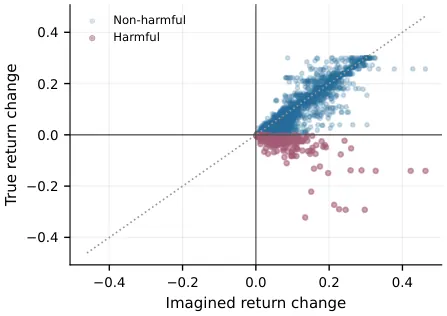
Minimal Recurrent Behavioral Memory for Imitation under Partial Observability
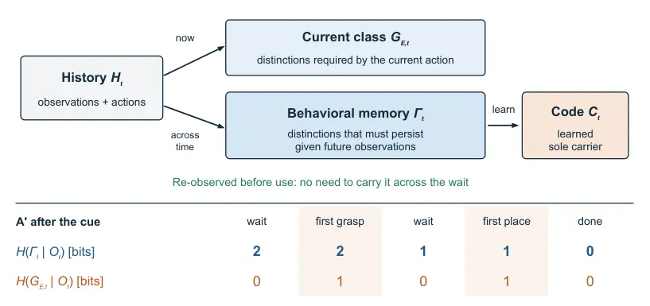
Brain-Inspired Hierarchical Modularity for General Continual Learning
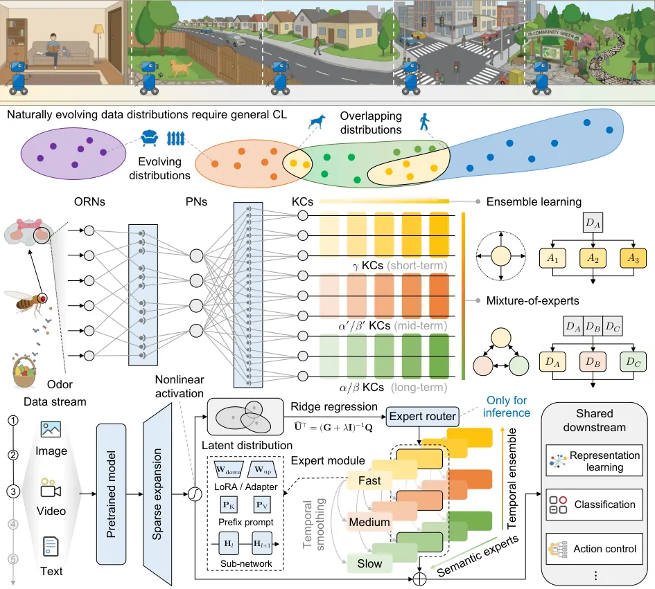
Skytopia: Monocular Drone Navigation with Action-Conditioned Latent World Models
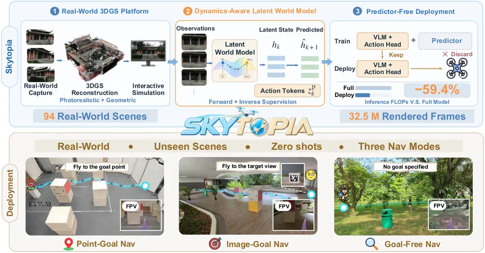
Sample, Simulate, Select: Physics-in-the-Loop Text-to-Motion for Humanoids Without Training
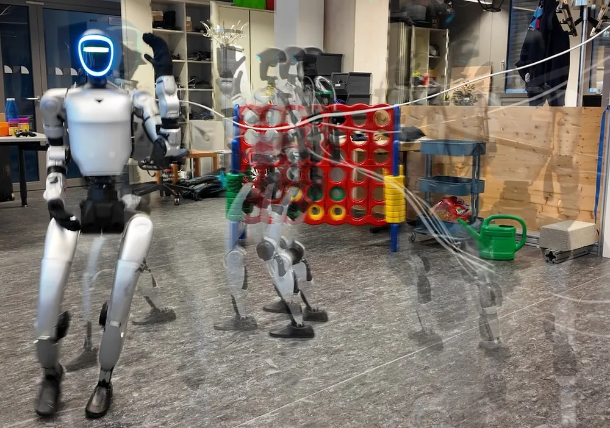
ForeDrive: Foresight-Guided End-to-End Autonomous Driving with a Planning-Relevant Latent World Model
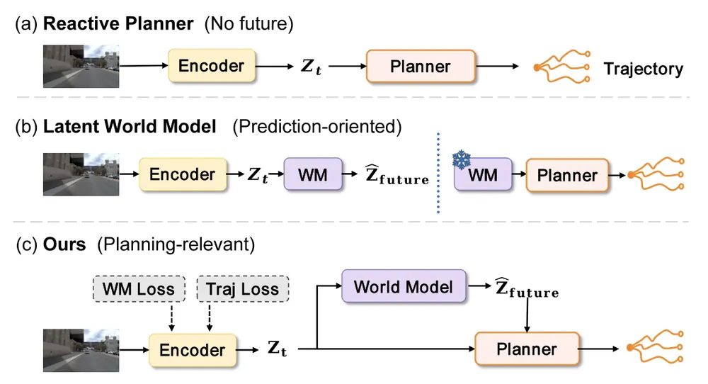
JAMB: Joint Action-Motion Diffusion for Bimanual Manipulation
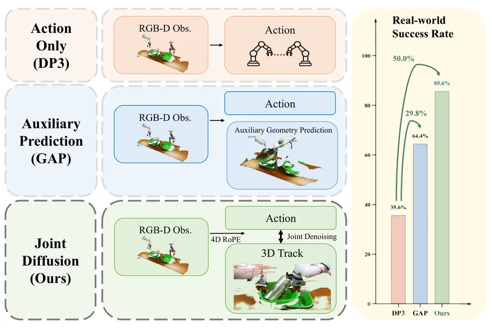
GDLAM: Group-Disentangled Latent Action Model for Highly Disentangled Embodied Pretraining
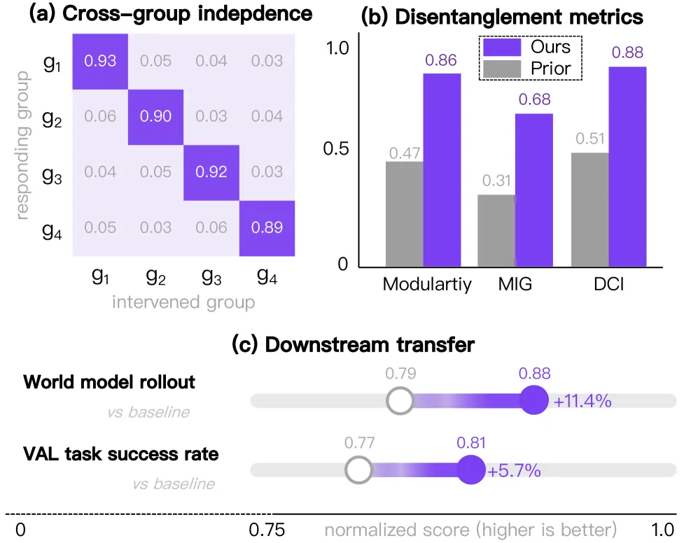
SafeLoop: Risk-Aware Rollback for Vision-Language-Action Manipulation
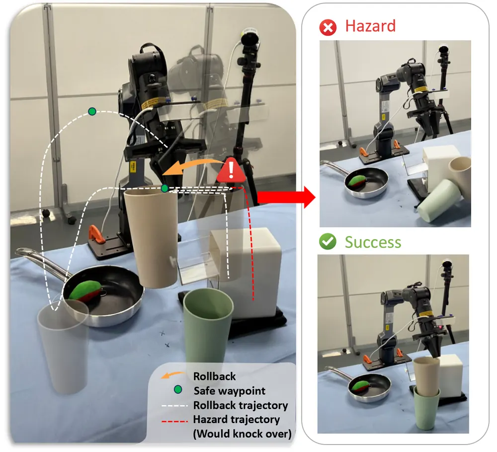
An Action Is Worth One Patch: Unified World-Action Modeling with PatchWAM
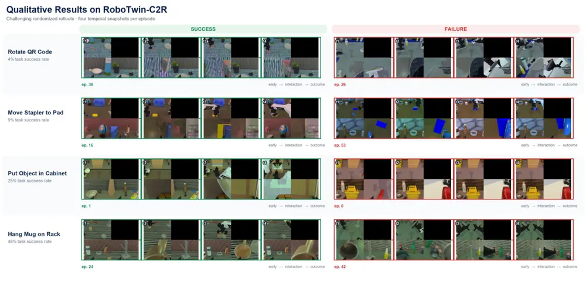
HABILIS Brain 0: Geometry-Change Supervision for Vision-Language-Action and Residual Flow Recovery
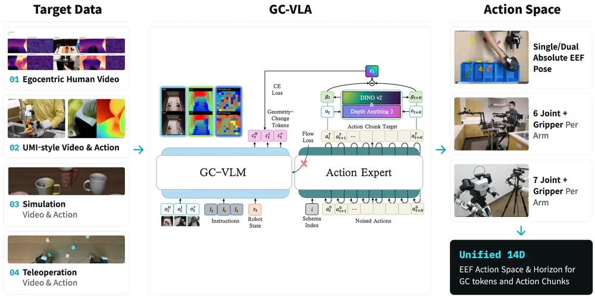
Metric-Bench: Exploring In-context Spatial Metric Reasoning in VLMs for Indoor Scenes
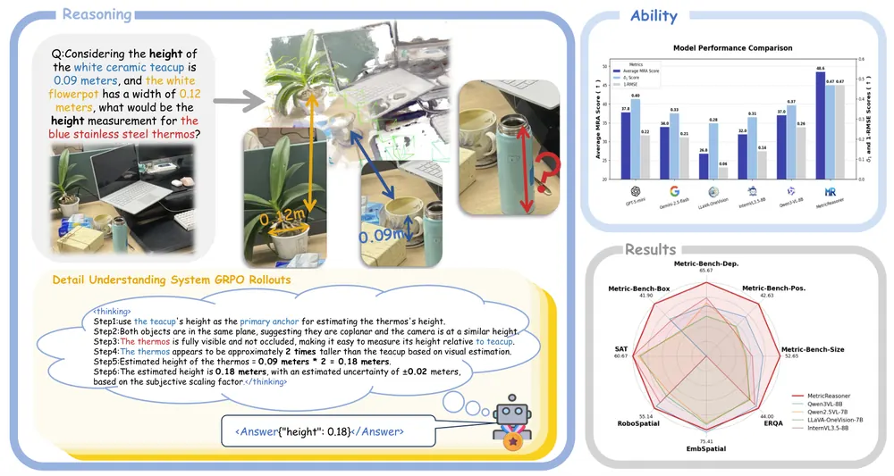
X-Planner: Event-Structured Task Planning for Embodied Intelligence
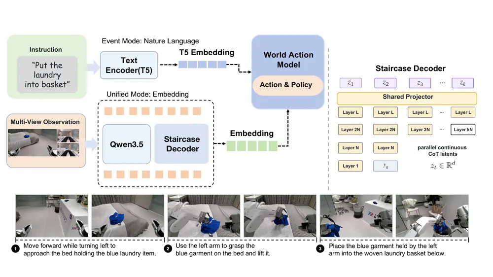
MachEmbodied-U0: Unified Understanding and Generation Model for Embodied Intelligence
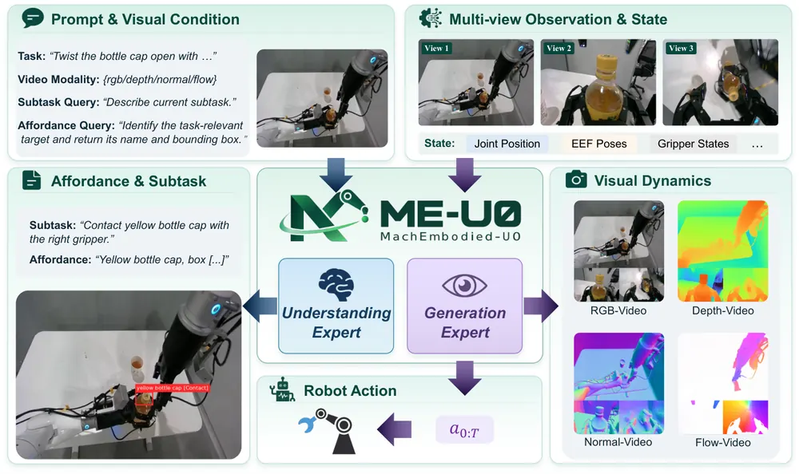
4DGS-JEPA: Temporally Compositional Joint-Embedding Prediction for Dynamic Gaussian Splatting
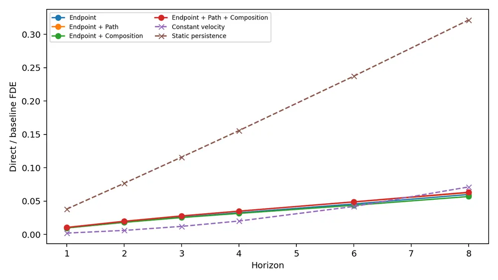
오늘의 핵심 연구 트렌드 종합
- world model 신뢰도 검증 — 예측이 틀렸을 때 원인이 정책 오류인지 world model 오류인지 관측만으로는 구분 불가능하다는 문제가 명시적 formulation으로 등장함. Dual-Frontier는 counterfactual decomposition과 인증된 오차 bound로 이를 풀고, ForeDrive는 causal intervention으로 world model이 정책에 실제로 쓰이는지 검증함. Skytopia는 반대로 world model을 policy 예측이 아니라 representation learning 신호로만 써 비교 기준을 제공함.
- latent action의 causal disentanglement — 카메라·물체·contact 원인이 하나의 latent action 벡터에 뒤섞이던 문제를 GDLAM이 그룹 단위 causal intervention으로 분리함. representation의 품질을 correlational metric이 아니라 개입 실험으로 검증하는 방식이 함께 제안됨.
- failure detection·recovery의 wrapper화 — SafeLoop, X-Planner, HABILIS Brain 0의 오류복구 모듈(HABILIS Brain 0의 경우 GCRF) 모두 기존 정책은 얼리고 hazard 예측·복구·error recognition만 별도 모듈로 붙이는 non-invasive 구조를 취함.
- test-time에 시뮬레이션으로 후보를 거르는 방식 — Sample, Simulate, Select는 학습 요소 없이 물리 시뮬레이터 rollout만으로 best-of-N motion candidate를 고름. 같은 promote-or-reject 원리가 Dual-Frontier의 gate에도 나타남.
- 미래 전체 재구성 대신 변화량·embedding만 예측 — 4DGS-JEPA, PatchWAM, HABILIS Brain 0 세 편 모두 RGB 재구성을 버리고 latent embedding 차이나 action과 같은 차원의 토큰만 예측하는 쪽으로 옮겨감.
- 정보이론적 진단 틀 — Minimal Recurrent Behavioral Memory는 특정 task를 모방하는 데 필요한 memory 양을 엔트로피로 정확히 특성화함. 아키텍처를 정하기 전에 필요조건을 수치로 재는 접근임.
유망 연구 방향 및 프로젝트 제안
world model 신뢰 gating을 manipulation VLA로 이식 - research question: 학습된 world model의 rollout을 언제 신뢰해서 policy 결정에 반영해야 하는가. - 접근·novelty: Dual-Frontier의 verify-then-promote gate(예측 이득 vs 인증된 오차 bound)를 real-robot manipulation의 model-based planning으로 옮기고, conformal calibration으로 여러 task에 걸쳐 인증서를 재사용함. tool-use agent 대상이던 원 formulation을 조작으로 확장하는 지점이 새로움. - 왜 지금·경쟁 prior works: SafeLoop과 ForeDrive도 신뢰도를 다루지만 통계적으로 인증된 오차 bound는 없음. 이 이론적 프레임을 real robot에 먼저 적용하는 위치를 선점할 수 있음. - risk·target venue: passive interaction만으로 policy·world model 오류를 구분 못 한다는 하한이 non-stationary한 real-robot 환경에서도 성립하는지 확인해야 함. CoRL/RSS.
grouped latent action을 scene graph node로 승격해 failure diagnosis - research question: disentangled latent action의 그룹별 causal intervention으로 조작 실패 원인을 특정 factor(카메라·물체·contact)로 지목할 수 있는가. - 접근·novelty: GDLAM의 그룹별 개입 프로토콜을 3D scene graph의 node 단위 개입으로 확장하고, object-centric 3DGS의 Gaussian 그룹에 latent action 그룹을 대응시킴. - 왜 지금·경쟁 prior works: GDLAM은 causal intervention protocol을 제안했지만 3D scene 구조와 연결하지 않음. 3DGS와 결합하면 formulation 신규성을 확보할 수 있음. - risk·target venue: latent group과 scene graph node가 학습만으로 자연스럽게 정렬될지 불확실함. 별도 alignment loss가 필요할 수 있음. CoRL/ICRA.
시뮬레이터 rollout 기반 test-time candidate selection을 manipulation으로 확장 - research question: manipulation에서도 학습 없이 시뮬레이터로 action candidate를 rollout해 고르면 성공률이 오르는가. - 접근·novelty: Sample, Simulate, Select(S3)의 sample-simulate-select 구조를 grasp/place 후보 trajectory에 적용하고, 실제 시뮬레이터가 없는 상황에서는 world model을 verifier로 대체함. - 왜 지금·경쟁 prior works: S3는 humanoid locomotion에 한정됨. world model을 verifier로 쓰는 조합은 아직 없음. 단, world model 예측 정확도와 policy 성공률이 비례하지 않는다는 JAMB의 관찰(appendix D)이 이 확장의 핵심 위험이자 검증 지점임. - risk·target venue: world model 기반 verifier가 실제 시뮬레이터보다 약한 신호를 줄 위험을 먼저 정량화해야 함. CoRL.
manipulation을 위한 memory 요구량 진단 프로토콜 - research question: long-horizon manipulation VLA가 특정 task를 풀기 위해 실제로 몇 bit의 recurrent memory가 필요한가. - 접근·novelty: Minimal Recurrent Behavioral Memory의 compatibility relation과 측정 프로토콜을 LIBERO 같은 partial observability manipulation task에 적용해, 기존 VLA의 context·memory 크기가 과도한지 진단함. - 왜 지금·경쟁 prior works: 원 논문은 toy manipulation task 검증에 한정됨. manipulation benchmark에 처음 적용하면 memory 압축·context 길이 결정이라는 실용적 기여로 이어짐. - risk·target venue: non-transitive한 일반 case의 exact certificate가 유한 인스턴스에만 있어 continuous state space로 확장할 때 근사가 필요함. NeurIPS workshop에서 먼저 검증.
변화량 기반 3DGS 시간축 표현과 VLA 사전학습 결합 - research question: 3DGS의 시간축 변화를 change-token으로 quantize해 VLA 사전학습에 붙이면 world model rollout 없이도 dynamics-aware policy를 얻을 수 있는가. - 접근·novelty: object-centric 3DGS의 Gaussian별 변화(위치·covariance·existence)를 HABILIS Brain 0의 geometry-change token 방식으로 quantize하고, 4DGS-JEPA의 hierarchical latent(scene/motion-group/Gaussian)와 결합해 3D grounding이 강한 change representation을 만듦. - 왜 지금·경쟁 prior works: HABILIS는 depth-DINO feature 차이를 썼고 3DGS로는 시도되지 않음. - risk·target venue: 4DGS-JEPA가 procedurally generated toy scene에만 검증돼 real scene 3DGS reconstruction의 노이즈에 얼마나 취약할지 불확실함. CVPR/CoRL.
오늘 반드시 읽어야 할 논문
- Dual-Frontier: When Can an Agent Trust Its World Model? — world model 신뢰 여부를 통계적으로 인증하는 gate를 처음 formulation한 논문이라 failure detection·counterfactual reasoning 두 축에 모두 걸림.
- Minimal Recurrent Behavioral Memory for Imitation under Partial Observability — memory 요구량을 엔트로피로 정확히 특성화하는 진단 틀을 제시해 robot memory 연구의 설계 전 단계에 바로 쓸 수 있음.
- GDLAM: Group-Disentangled Latent Action Model — latent action을 causal하게 그룹 분리하고 개입으로 검증한 방법론이 scene graph 연구와 접점이 큼.
- Skytopia: Monocular Drone Navigation with Action-Conditioned Latent World Models — world model을 predictor가 아니라 representation learning 신호로만 쓰는 반대 방향의 formulation이라 비교 기준으로 유용함.
- Sample, Simulate, Select — 학습 없이 시뮬레이터 rollout만으로 후보를 고르는 test-time verification의 가장 단순한 형태를 보여줌.
- JAMB: Joint Action-Motion Diffusion for Bimanual Manipulation — action과 3D point track을 함께 denoise하는 구조와, track 정확도가 성공률을 보장하지 않는다는 반례가 함께 있어 참고할 지점이 많음.
- SafeLoop: Risk-Aware Rollback for Vision-Language-Action Manipulation — hazard를 prob+time-to-hazard로 분리 예측하는 실용적인 output 설계를 제시함.
- Brain-Inspired Hierarchical Modularity for General Continual Learning — gradient-free routing으로 여러 domain에서 online continual learning을 일관되게 개선해 VLA의 long-horizon skill 축적에 응용 여지가 큼.
전체 1차 스크리닝 결과 (511편, 점수순) 펼치기
| # | 제목 | 점수 | 🤖 | 분야 | 한 줄 근거 |
|---|---|---|---|---|---|
| 1 | Minimal Recurrent Behavioral Memory for Imitation under Partial Observability | 78 | 8 | RL | partial observability에서 imitation에 필요한 최소 recurrent memory를 정보이론적으로 정식화하고 manipulation task에서 학습 난이도까지 실증한 새로운 problem formulation임. |
| 2 | 4DGS-JEPA: Temporally Compositional Joint-Embedding Prediction for Dynamic Gaussian Splatting | 78 | 7 | World Model | 동적 3D Gaussian Splatting 장면에 JEPA식 joint-embedding prediction을 결합해 재사용 가능한 predictive dynamics를 학습하는 새 formulation임. temporal composition·hybrid correspondence 등 이론적 분석까지 갖춰 world model·object-centric 4D representation 우선주제와 직결됨. 다만 controlled toy 실험 위주라 실로봇 검증은 아직 없음. |
| 3 | Dual-Frontier: When Can an Agent Trust Its World Model? | 75 | 6 | World Model | world model 기반 결정 실패를 정책 오류와 world model 오류로 분해하는 것이 관측만으로는 식별 불가능함을 증명하고, 인증된 오차 한계를 넘을 때만 world model을 신뢰하는 verify-then-promote 원칙을 제안함. failure attribution·test-time verification이 우선주제와 정확히 맞고 이론적 보장(non-decreasing return)까지 제시함. 다만 실험은 tool-use 벤치마크 중심이라 실로봇 검증은 없음. |
| 4 | X-Planner: Event-Structured Task Planning for Embodied Intelligence | 72 | 9 | VLA | VLA의 암묵적 계획 구조를 event-structured plan으로 명시화하고 discrete·latent 두 인터페이스를 staircase decoding으로 연결한 planning front-end임. 실로봇 실험까지 포함해 long-horizon manipulation·VLA 우선주제에 정확히 부합함. 다만 오프라인 평가에서 4개 모델 중 2위라 우위가 확정적이지는 않음. |
| 5 | ForeDrive: Foresight-Guided End-to-End Autonomous Driving with a Planning-Relevant Latent World Model | 70 | 8 | World Model | 예측 가능성이 아니라 planning에 실제로 쓰이도록 JEPA latent를 diffusion planner에 비대칭 결합해 world model 표현과 계획을 분리한 problem formulation이 새롭고 NAVSIM에서 강한 실험 증거를 보임 |
| 6 | JAMB: Joint Action-Motion Diffusion for Bimanual Manipulation | 68 | 9 | Manipulation | 양손 조작 action과 미래 3D point track을 하나의 diffusion에서 함께 denoise해 기하학적 결과를 명시적으로 모델링한 정책으로 real robot에서 baseline보다 20%p 넘게 향상시킴. |
| 7 | An Action Is Worth One Patch: Unified World-Action Modeling with PatchWAM | 68 | 9 | World Model | action을 visual patch와 같은 표현으로 다뤄 별도 action head 없이 visual prediction과 action generation을 하나의 generative process로 통합한 새 paradigm임. LIBERO-Plus 91.8%, RoboTwin 2.0 96.12%로 실험적 근거도 강함. |
| 8 | MachEmbodied-U0: Unified Understanding and Generation Model for Embodied Intelligence | 66 | 8 | VLA | subtask 예측·affordance grounding으로 시각 동역학과 행동 생성을 함께 flow matching으로 묶은 통합 embodied foundation model로 4200시간 데이터 사전학습으로 LIBERO-Plus 82.5%를 달성했고 zero-shot affordance·동역학 전이까지 보였음. |
| 9 | GDLAM: Group-Disentangled Latent Action Model for Highly Disentangled Embodied Pretraining | 65 | 9 | World Model | latent action을 N개 그룹으로 강제 분리하고 상호 배타성·정적동적 직교성 objective로 학습해 causal하게 구분되는 표현을 만듦. world model rollout fidelity와 VLA 정책 성공률 모두에서 SOTA를 능가해 재사용 가능한 pretraining currency로서 근거가 탄탄함. |
| 10 | Brain-Inspired Hierarchical Modularity for General Continual Learning | 65 | 8 | VLA | 초파리 학습계에서 따온 계층적 modular 구조를 foundation model에 경량 적용해 embodied manipulation의 online continual learning에서 replay-free 대안보다 50%p 넘게 개선한 결과가 강함 |
| 11 | SafeLoop: Risk-Aware Rollback for Vision-Language-Action Manipulation | 62 | 9 | VLA | VLA 파라미터를 바꾸지 않고 hazard 예측과 rollback 복구를 외부에서 감싸는 SafeLoop을 제안함. LIBERO 24개 태스크와 실로봇 3개 태스크에서 hazard를 약 70% 줄이면서 성공률은 유지해 failure recovery 우선 주제에 정확히 부합함. |
| 12 | HABILIS Brain 0: Geometry-Change Supervision for Vision-Language-Action and Residual Flow Recovery | 62 | 8 | VLA | 현재 관측에서 미래 기하 변화를 예측하도록 pretrain한 VLA로 LIBERO에서 95.2%, residual flow 추가 시 99.55%를 달성했고 embodiment-agnostic 사전학습이라는 formulation이 있으나 LIBERO 위주 검증이라 실로봇 증거는 제한적임. |
| 13 | Skytopia: Monocular Drone Navigation with Action-Conditioned Latent World Models | 62 | 8 | World Model | world model에서 실제로 필요한 건 prediction이 아니라 그 representation이라는 관찰로 predictor를 추론 시 버리는 구조를 제안함. 실제 드론에 fine-tuning 없이 배포해 성공률 57.8~66.0%를 얻어 실증까지 강함. |
| 14 | Metric-Bench: Exploring In-context Spatial Metric Reasoning in VLMs for Indoor Scenes | 60 | 8 | VLA | 참조 물체의 실제 치수를 활용해 카메라 파라미터 없이 2D-3D metric mapping을 암묵적으로 학습시킨 벤치마크·RL fine-tuning으로 RoboSpatial 등 embodied spatial reasoning 성능을 크게 올림 |
| 15 | Sample, Simulate, Select: Physics-in-the-Loop Text-to-Motion for Humanoids Without Training | 60 | 8 | Embodied AI | 학습 없이 배포용 tracking controller 자체를 verifier로 써서 text-to-motion 후보 중 실행 가능한 것을 고르는 test-time 방법임. G1 실로봇에서 177개 클립 전부 완주해 test-time optimization 우선 주제와 잘 맞음. |
| 16 | SAM-V: Geometry-Aware Segment Anything for Multi-View Instance Segmentation | 60 | 6 | 3D Vision | VGGT geometry feature를 SAM prompt에 직접 융합해 offline matching 없이 multi-view instance segmentation을 일관되게 푼 점이 robot 3D perception에 유용함 |
| 17 | Code Plans, Diffusion Renders: Open-Ended Generative World Modeling | 60 | 6 | World Model | 코드로 실행 가능한 world rule을 짜고 video generation으로 시각화만 맡기는 방식으로 기존 암묵적 dynamics 학습과 다른 problem formulation을 제시해 장기 기억·자율 진화·다중 에이전트를 지원함 |
| 18 | RoboFollow: Unveiling the Instruction Following Mirage in Embodied Agents | 58 | 8 | VLA | 장면이 하나의 task만 허용하면 언어가 사실상 필요 없어지는 low scene entropy 문제를 짚어내고 9개 VLA·WAM 정책이 L1 이상에서 instruction following이 무너짐을 보인 진단 benchmark로 문제 정식화 자체가 새로움. |
| 19 | ϕ-RIE: From Photorealistic Reconstruction to Interactive Environments | 58 | 8 | 3D Vision | 물체 identity 하나로 movable asset 생성과 배경 completion을 동시에 결정하는 coupled construction이 핵심 아이디어임. ScanNet++ 50개 장면에서 matched F1을 0.336에서 0.383으로 올려 3DGS 기반 interactive simulation 자산화에 실질적 진전을 보임. |
| 20 | PLAT: Sparse Timed Keyframe Motion Tracking for Humanoid Control via Privileged Latent Transition Learning | 58 | 7 | RL | sparse timed keyframe tracking이라는 새 문제 정의를 제안하고 privileged latent transition learning으로 3단계 학습함. G1 실로봇 배포까지 확인해 실험적 근거가 탄탄함. |
| 21 | DreamStream: Towards Policy-Oriented Generative Simulation for End-to-End Driving | 56 | 6 | World Model | 정책이 실제로 의지하는 scene feature를 보존하며 visual appearance만 바꾸는 policy-oriented generative simulator를 제안함. 새 지표 FDπ로 sim-to-real gap을 재정의하고 CoRL 2026에 채택돼 검증도 받았음. |
| 22 | VisForce: Visual Grounding of Current and Desired Forces for Goal-Conditioned Dexterous Manipulation | 55 | 9 | Manipulation | 현재/목표 force를 fingertip 위치에 시각적으로 grounding해 VLA에 넣는 새로운 representation임. 실로봇 dexterous hand로 force-conditioned grasping까지 검증함. |
| 23 | Imperfection for Precision: Upcycling Imperfect Data for High-Precision Robotic Manipulation | 55 | 9 | VLA | flow-matching의 noise 수준에 따라 저정밀 target-task 데이터와 고정밀 mismatched-task 데이터의 역할을 분리해 쓰는 방법임. 실로봇 서브밀리미터 정밀 태스크에서 최대 31.7%p 성능 향상을 보여 데이터 재활용 전략으로서 실증이 강함. |
| 24 | What is the Better Curriculum: Controller-Shaped Grasping Behavior for Contact Force-Sensitive Manipulation | 55 | 8 | Manipulation | tactile을 policy 입력이 아니라 수집 단계의 teacher로 쓴다는 새로운 역할 제시가 핵심임. ACT에서 95% 안정 grasp를 얻었고 pi_0.5에서도 재현했지만 외란에는 rollback 없이 45% 실패함. |
| 25 | Manipulation with Stability Guarantees: Linear Deformable Objects with Non-negligible Physical Response Grasped at Multiple Location | 55 | 8 | Manipulation | 물리적 반응이 무시할 수 없는 선형 변형체를 shape-regulation 문제로 재정의하고 SE(3)로 actuation coordinate를 확장한 게 핵심임. quasi-static 가정을 벗어난 새 formulation이고 실시간 폐루프 실험으로 검증함. |
| 26 | Fully Byzantine-Resilient Multi-Agent Reinforcement Learning | 55 | 7 | RL | 두 홉 메시지의 중복성으로 신뢰 가능한 메시지를 식별해 Byzantine edge 공격에도 attack-free 극한으로 수렴함을 증명하고 협력형 다중 로봇 formation control에서 확인함 |
| 27 | Beyond End-Task Success: How to Audit Visual Experience Retrieval in Robotics | 55 | 7 | Manipulation | 저장된 경험을 전부 실행해 성공률 숫자가 selection 품질이 아니라 library 품질을 반영할 수 있음을 보이는 audit 방법론임. K=50에서 시각적 거리 기반 랭킹이 chance 수준(AUROC 0.45~0.52)이라는 결과가 기존 평가 관행에 경종을 울림. |
| 28 | Geometric and Semantic Coupling for Interaction Understanding in 3D Scenes | 55 | 6 | 3D Vision | part-handle 기하 관계로 articulated object motion을 추정해 manipulation affordance에 쓸 만한 object-centric 3D representation임 |
| 29 | Fysiverse-3D-Vision Technical Report: Generating Executable 3D Worlds from Images through Unified Spatial Reasoning | 55 | 6 | 3D Vision | 단일 이미지에서 객체 의미·metric geometry·장면 관계를 하나의 transformer로 함께 추정해 실행 가능한 3D 장면을 만든 점이 embodied 시뮬레이션 자산 생성에 유용함 |
| 30 | PartLLM: A Unified Multimodal Foundation for 3D Part Segmentation | 55 | 6 | 3D Vision | text·point·전체 분해를 하나의 intent-conditioned generative 문제로 통일해 3D part segmentation을 autoregressive하게 푼 점이 manipulation affordance 학습에 쓸 만함 |
| 31 | RECAP: Relation Evidence Calibration for Detecting Spatial Relation Hallucinations in Vision-Language Models | 55 | 6 | VLA | 확신도 대신 이미지 근거를 직접 비교해 VLM의 공간 관계 답변을 승인·거부하는 relation-grounded selective prediction을 제안해 embodied spatial reasoning의 신뢰성 문제에 닿아 있음 |
| 32 | HARMONY: Hierarchical Agentic Reasoning for MONocular Image-to-Scene Synthesis | 55 | 6 | 3D Vision | agentic VLM reasoning으로 room layout을 잡고 point cloud로 기하를 정제하는 계층적 배치 순서를 도입해 단일 이미지 compositional 3D 복원의 정합성을 높임 |
| 33 | Hill Sampling for Test-Time Scaling: A Simple and Better Alternative to Repeated Sampling, Evolution, and Training | 55 | 5 | RL | 복잡한 진화 탐색이나 test-time weight 학습 없이 최고 해를 조건으로 반복 샘플링만 해도 더 낫다는 것을 보여 test-time optimization의 불필요한 복잡성을 지적한 실증 연구임 |
| 34 | GameDirector: Decoupling Gameplay Logic from Rendering for Player-Configurable Game World Models | 55 | 4 | World Model | 규칙 기반 게임플레이 로직과 렌더링을 분리해 world model에 명시적 상태 전이를 부여한 구조로 로봇 world model의 상태 신뢰성 설계에 참고할 만함 |
| 35 | StrataVLA: Hierarchical and Efficient 3D Geometric Grounding for Vision-Language-Action Models | 52 | 9 | VLA | frozen geometry foundation model을 layer별 adapter로 VLA backbone 곳곳에 붙여 3D 정보 접근을 지속시키는 구조임. LIBERO 98.53%에 geometry 호출을 88% 줄였지만 기존 adapter 삽입 아이디어의 정교화에 가까움. |
| 36 | Beyond Reconstruction Error: Analytical and Data-Driven Action Tokenization for Autoregressive Vision-Language-Action Models | 52 | 8 | VLA | action tokenization을 reconstruction fidelity만으로 고르면 안 된다는 걸 3,500 LIBERO rollout으로 보여줌. PCA가 재구성 오차는 낮아도 정책 성공률은 낮다는 반직관적 결과가 방법론적으로 유용함. |
| 37 | TriWorldBench: A Tri-View Consistency Perspective on Embodied World Models | 52 | 8 | World Model | head/wrist 카메라 예측이 서로 같은 action과 물체 상태를 그리는지 확인하는 tri-view consistency benchmark를 처음 제시함. 500 episode, 19개 지표로 world model 평가의 사각지대를 짚어낸 점이 유용함. |
| 38 | RouteRLT: Learning When and Which RL Specialist Should Control a Vision-Language-Action Policy | 52 | 8 | VLA | 정밀 구간에서만 RL specialist가 generalist VLA의 제어권을 가져가도록 학습된 routing을 제안함. 실제 케이블 픽업/포트 삽입 태스크에서 privileged phase boundary 없이도 그와 맞먹는 성능을 보임. |
| 39 | From Instrument-Mounted Demonstrations to In-Vivo Execution: Learning Bimanual Laparoscopic Appendectomy Without Robot-Collected Demonstrations | 52 | 7 | Manipulation | 로봇이 아닌 수술도구에서 기록한 시연으로 diffusion policy를 학습해 살아있는 동물 4마리 중 3마리에서 충수절제를 완료한 실증으로 로봇 시연 수집 없이 학습하는 새 데이터 확보 방식임. |
| 40 | NavSafe-$\infty$: Benchmarking Closed-Loop Driving Safety in Photorealistic Environments | 52 | 6 | Navigation | 280개 시나리오의 photorealistic closed-loop benchmark로 open-loop 성능이 closed-loop 안전성으로 이어지지 않음을 보임. RL fine-tuning이 안전 마진을 ego progress와 바꾸는 reward hacking을 드러낸 점이 특히 유용함. |
| 41 | Fisheye-VLA: Decoupling Coverage and Acuity for Manipulation with a Single Fisheye Camera | 50 | 8 | VLA | 카메라 crop 방향을 controlled study로 검증해 wrist camera 없이 84%/82% 성공률 달성함. 카메라 인터페이스 설계 최적화 수준이라 formulation 자체의 novelty는 크지 않음. |
| 42 | RoboTwin-Phys: Do WAMs and VLAs Understand the Physical World? | 50 | 8 | Manipulation | 질량·마찰 같은 물리 파라미터를 명시적으로 다양화한 benchmark를 제시해 기존 WAM/VLA가 physical condition 변화에 취약함을 드러냄. 새 방법은 아니지만 그동안 가려졌던 로버스트니스 격차를 실증적으로 보여준 점이 가치 있음. |
| 43 | MAVP: Map-Aware Visuomotor Policies for Mobile Manipulation | 50 | 8 | Manipulation | base pose target을 명시적으로 예측하고 localization feedback으로 추적해 mobile manipulation의 공간 정렬 실패를 줄임. 실제 6개 태스크, 3개 정책군에서 unanchored velocity control보다 항상 높은 성공률을 보임. |
| 44 | MATE: Multi-Agent Virtual Teleoperation Platform for Humanoid Collaboration Data Collection | 50 | 8 | Embodied AI | 여러 원격 operator가 하나의 물리 시뮬레이션에서 동시에 whole-body humanoid를 조종해 협업 데이터를 모으는 새 teleoperation 방식임. 실제 humanoid로 zero-shot 전이까지 확인했지만 데이터 수집 인프라 성격이 강함. |
| 45 | Brace Yourself: Task-Conditioned Environmental Bracing for Forceful Humanoid Manipulation | 50 | 7 | Manipulation | 환경에 한 손을 지지시켜 다른 손의 힘 작업 안정성을 높이는 task-conditioned bracing 전략으로 실제 로봇에서 견딜 힘을 13.5N에서 60N으로 늘린 새로운 problem formulation임. |
| 46 | Moving6DPoSe: A Multimodal Database for Monocular 6D Pose Estimation and Segmentation of Moving Objects | 50 | 6 | Manipulation | 이벤트·프레임 모달리티를 함께 제공하는 이동 물체 6D pose 데이터셋으로 파악 등 조작에 필요한 pose estimation 연구에 baseline을 제공함 |
| 47 | Leveraging Vision-Based Point Cloud Map Priors for Camera-Based 3D Object Detection and Online Vectorized HD Mapping | 50 | 6 | Navigation | 이전 주행에서 쌓은 vision 기반 point cloud prior에 DINOv3 semantic feature를 붙여 LiDAR 없이도 장기 scene memory로 카메라 인식·HD 지도화를 개선함 |
| 48 | Neurosymbolic Action Model Learning under Partial Observability | 50 | 5 | RL | 부분관측 상황에서 신경symbolic action model을 학습하는 새 패러다임임. planning 문제 formulation 신규성이 있고 TAMP와 결이 맞지만 시각 planning 도메인 실험이라 실로봇 검증은 없음. |
| 49 | EMERGE: Resolution-Agnostic Point Cloud Generation with Equivariant Graph-Based Diffusion | 50 | 4 | 3D Vision | SE(3) equivariance를 보존하는 첫 graph 기반 diffusion으로 해상도에 무관하게 point cloud를 생성한 새로운 backbone 설계임 |
| 50 | Test-time Reinforcement Learning for Anomalous Video Understanding | 50 | 4 | Video | 합의가 약한 pseudo-label을 걸러내고 unanimous rollout에도 gradient가 살도록 virtual negative anchor를 넣은 test-time RL로 test-time optimization 주제에 부합함 |
| 51 | When Riemann flows with Wasserstein: Generative Modeling of Probability Distributions on Manifolds | 50 | 0 | LG | 리만 다양체 위 Wasserstein 공간에서 optimal transport velocity로 학습하는 flow matching을 제안해 meta-distribution 생성을 가능하게 한 새 표현·이론 기여임 |
| 52 | Capability-Aware Arbitration for Semantic Intent-Based Shared Control | 48 | 7 | VLA | VLM intent confidence와 VLA action 분산 기반 capability confidence를 결합해 로봇 권한을 조정하는 shared control로 사람 12명 실험에서 성공률을 크게 높였으나 기존 신뢰도 신호를 조합한 수준임. |
| 53 | The Cartesian Hand: In-Hand Manipulation with All-Linear Fingers | 48 | 7 | Manipulation | 선형 운동만으로 독립 파악과 상대 조작을 동시에 하는 7-DoF end-effector를 설계해 35개 물체에서 뚜껑 열기·주입·나사돌리기 등을 시연한 새로운 기계 구조 제안임. |
| 54 | SparseNav: Instruction-conditioned Sparse Semantic Perception for Training-Free Vision-Language Navigation | 48 | 7 | Navigation | 현재 sub-instruction에 필요한 landmark만 온디맨드로 인식하는 less-is-more 원칙의 training-free VLN 방법임. Unitree Go2 실기 배포까지 검증했지만 R2R-CE 42.8%는 학습 기반 SOTA에는 못 미침. |
| 55 | You Should Be Properly Scoring Your Odometry | 48 | 4 | Navigation | odometry 평가에 point metric 대신 strictly proper scoring rule을 쓰자는 제안으로 일반화 가능한 평가 도구임. 실제 LiDAR-inertial filter들의 overconfidence를 ground truth 없이도 잡아냄. |
| 56 | Latest Exact Match Attention | 48 | 1 | LG | 정확 일치 키만 attend하는 attention 변형을 word-RAM 시뮬레이션으로 이론화하고 834M 규모까지 실증했지만 robotics와는 무관함. |
| 57 | HOTICE: Whole-Body Humanoid Object Transportation in Cluttered Environments | 46 | 7 | Manipulation | 로봇과 물체를 함께 고려한 potential field와 dual-agent RL로 혼잡 환경 이동을 학습한 프레임워크로 sim2real 실증은 있으나 기존 whole-body RL 기법의 조합적 확장에 해당함. |
| 58 | RoboMP-DINOv2: Prompts, Not Filters for Robust Robot Manipulation | 46 | 7 | Manipulation | segmentation mask를 필터가 아닌 spatial prompt로 써서 맥락을 보존하는 vision encoder로 여러 시뮬레이션 setting에서 baseline보다 10~37%p 높은 성공률을 보였으나 encoder 설계 개선 수준임. |
| 59 | PAKT: Physically-Aligned Kinesthetic Teaching for Reinforcement Learning | 46 | 7 | Manipulation | kinesthetic teaching 시 로봇이 못 따라갈 궤적을 admittance control과 기구학적 한계로 걸러내는 인터페이스로 산업 삽입 과제에서 HIL-SERL 대비 사이클 타임 23~48%, 개입 횟수 62~86% 줄였으나 인터페이스 개선 수준임. |
| 60 | Hierarchical Floorplan-Guided Vision-Language Exploration for Embodied Question Answering | 46 | 7 | Embodied AI | scene graph, VLM planning, semantic frontier exploration에 floorplan prior까지 더한 계층적 EQA 프레임워크임. 사족보행 로봇 실내 배포까지 갔지만 기존 요소들의 결합에 가까움. |
| 61 | Dual Covariance Gaussian Splatting SLAM: Decoupling Rendering and Registration for Robust Real-Time Tracking | 46 | 6 | 3D Vision | 렌더링용과 추적용 covariance를 분리해 3DGS SLAM의 상충하는 요구를 해소한 기법으로 실내외 다양한 시퀀스에서 60FPS로 드리프트를 줄였고 object-centric 3DGS 우선주제와 관련 있음. |
| 62 | ArborSplat: Online Semantic Gaussian Splatting SLAM for Orchards | 46 | 6 | 3D Vision | 과수원 로봇을 위해 LiDAR odometry로 tracking하고 클래스별 height band로 얇은 구조물의 semantic Gaussian을 보정하는 온라인 3DGS SLAM임. 실제 사과·배 과수원 12개 경로에서 ATE 0.5m 이하를 유지해 실증이 구체적임. |
| 63 | Dr-LiSA: Direct Radar-Lidar Scan Alignment for $SE(3)$ Localization | 46 | 5 | Navigation | lidar submap에서 radar 관측을 예측하는 학습된 forward model로 radar-lidar를 SE(3)에서 직접 정합하는 첫 방법임. 90km 이상의 실도로 데이터로 검증해 실험적 근거가 좋음. |
| 64 | MoM: Memory of Memory | 46 | 3 | NLP | 덮어쓰지 않고 이전 값을 provenance로 남기면서 새 값을 즉시 commit하는 memory paradigm을 제안함. CRUD memory가 못 하는 오류 복구를 100% 대 0%로 해내 robot memory 연구에도 참고할 만한 formulation임. |
| 65 | CoEvo: Oracle-Grounded Self-Evolution of a Single Model for Multi-Step Causal Reasoning | 46 | 1 | Causal Reasoning | deterministic oracle로 단계별 검증하며 self-evolution하는 causal reasoning 프레임워크로 산업·임상 도메인 실증은 있으나 robotics 무관함. |
| 66 | Double Descent and Malign Overfitting in Diffusion Models | 46 | 1 | World Model | diffusion model의 overparameterization이 회귀와 달리 malign overfitting을 일으키는 메커니즘을 이론과 U-Net 실험으로 규명해 생성모델 학습에 참고될 통찰이 있으나 robotics 무관함. |
| 67 | Matryoshka attribution: Learning to attribute language model outputs to representations and weights | 46 | 0 | NLP | attribution을 downstream loss를 최소화하는 내포 부분집합 탐색 문제로 재정의한 MAttr을 제안함. Mechanistic Interpretability Benchmark 1위와 weight 1%만 되돌려 refusal을 없애는 응용까지 보여 방법론적 기여가 구체적임. |
| 68 | Vision Foundation Models with Synthetic-Only Training for Monocular Spacecraft Pose Estimation | 45 | 6 | Manipulation | DINOv3 foundation model을 heatmap pose 아키텍처에 붙여 합성 데이터만으로 우주선 pose estimation 오차를 줄이고 임베디드 보드에서 실시간성까지 확인함 |
| 69 | Robust Active-Perception Control for Global-State-Free Aerial-Ground Cooperation | 45 | 6 | Navigation | gimbal로 카메라 광축을 분리하고 TCN으로 UGV 움직임을 예측해 MPC에 넣는 active perception 프레임워크임. 실외 실험까지 갔지만 구성 요소 조합 수준의 엔지니어링임. |
| 70 | Predict Before You Step: Auditable Occupancy Forecasting for Dynamic Obstacle Avoidance under Sparse Guidance | 45 | 6 | Navigation | occupancy를 1초 앞까지 예측해 sparse waypoint 기반 locomotion을 돕는 LOOP를 제안함. Go2 실로봇에서 16회 충돌 없이 통과했지만 예측 branch의 이득은 시나리오에 따라 제한적임. |
| 71 | Toward User-Mediated Self-Repair in Ubiquitous Robots Through Goal-Oriented Agentic AI | 45 | 6 | Embodied AI | 웨어러블 로봇의 자가 수리를 비전문가가 대화로 수행하도록 돕는 목표 지향 에이전트 아키텍처임. 실제 하드웨어 테스트베드와 20인 사용자 연구를 거쳤고 failure recovery·human-robot interaction과 맞닿아 있으나 조작·VLA 핵심 문제는 아님. |
| 72 | LiFR v2: Completion-Augmented Event Propagation for High-Rate Dense Prediction | 45 | 5 | CV | event로 RGB propagation의 미지원 영역을 보완하는 completion module을 더해 100FPS 넘는 고속 dense prediction을 이룬 점이 실시간 로봇 인식에 참고할 만함 |
| 73 | Calibrating Retrieval Geometry: Reliability-Guided Training-Free Aggregation for Visual Place Recognition | 45 | 5 | Navigation | 라벨 없이 codebook 간 합의·spectral 통계로 frozen feature의 aggregation을 재조정한 training-free visual place recognition으로 로봇 loop closure에 바로 쓸 만함 |
| 74 | GRIP: Gaussian Rendering as a Cross-Modal Bridge for Image-to-Point Cloud Registration | 45 | 5 | 3D Vision | 3D point feature를 Gaussian splatting으로 이미지 격자에 렌더링해 2D-3D 정합의 구조 불일치를 해소한 아이디어로 로봇 SLAM 정합에 참고할 만함 |
| 75 | Correcting Within-Group Self-Selection Bias in Prioritized Replay | 45 | 5 | RL | PER이 확률적 환경에서 같은 state-action의 결과 분포를 왜곡한다는 것을 규명하고 이를 고치는 fixed-buffer correction들을 유도한 RL 기본 기법 연구임 |
| 76 | OmniFysics-Nano-V2 Technical Report: Understanding the Physical World Across Modalities | 45 | 4 | Multimodal | 물리 속성·인과 상호작용을 명시적으로 학습시키는 omni-modal 물리 이해 모델임. world model·물리 추론 우선주제와 방향은 맞지만 로봇 실험은 없고 벤치마크 개선 중심임. |
| 77 | Video-HopChain: Multi-Hop Questions and Confidence-Gated Exploration for Video Reasoning Models | 45 | 3 | Video | multi-hop video 질문 데이터셋과 GRPO의 무응답 그룹 문제를 완화하는 confidence-gated exploration을 함께 제안한 RL 학습 기법임 |
| 78 | Virtual Encoders in Multimodal Transformers | 45 | 3 | Multimodal | perceptual encoder 없이도 shared transformer가 초중반 층에서 인코딩 계산을 스스로 만들어낸다는 것을 발견해 perception-language 경계가 모듈 단위가 아닐 수 있음을 시사함 |
| 79 | Concept Drift from a Causal Perspective | 45 | 3 | RL | concept drift를 structural causal model 관점에서 외생 변수·기제·confounder·target 생성으로 유형화해 원인별로 다른 분포 변화 패턴을 실증한 이론적 기여임 |
| 80 | Entropy Can Flow, or It Can Guide. Be Entropy. LEDFlow: Introducing Entropy-guided Generation Order into Uniform Discrete Flow | 45 | 1 | LG | 국소 entropy로 uniform discrete flow의 absorption 순서를 정해 정답 예측이 나중에 오염되는 것을 막은 training-free sampler 기법임 |
| 81 | Mean Velocity Matching: Rethinking Generative Dynamics in Diffusion Models | 45 | 1 | LG | score를 따로 추정하지 않고도 stochastic reverse dynamics를 지원하는 단일 velocity field 파라미터화를 제안한 diffusion 모델 이론 기여임 |
| 82 | Self-Supervised Combinatorial Optimization with Constraints via Frank-Wolfe | 45 | 1 | LG | 제약 있는 combinatorial optimization을 Frank-Wolfe 분해로 미분가능하게 만드는 일반 프레임워크로 formulation은 새롭지만 robotics 적용은 없음. |
| 83 | MedVLA: A Hierarchical Vision-Language-Action Framework for Closed-Loop Precision Medical Robot Manipulation | 44 | 7 | VLA | hierarchical VLA에 function-constrained execution을 결합해 의료 로봇 정밀 조작에 적용함. OpenVLA(8%), pi0(15%) 대비 95% 성공률은 강하지만 구조는 기존 요소 조합에 가까움. |
| 84 | Learning from Humans for Proactive Assistance in Human-Robot Collaborative Transport | 44 | 6 | Manipulation | 인간 협력 운반 예측을 whole-body compliant control에 결합한 프레임워크로 실제 108회 실험에서 상호작용 노력을 최대 59%p 줄였으나 예측·compliance 결합 수준의 engineering임. |
| 85 | REDACT: Robust Perceptive Locomotion under Unseen Visual Corruption | 44 | 6 | Navigation | 학습 분포 밖 시각 손상에도 유용한 depth 정보를 유지하는 teacher-student·conformal gating 기법으로 실환경 parkour 실증이 있으나 corruption robustness라는 특정 문제에 국한됨. |
| 86 | CableVLA: Simulation-Privileged Global-Local Representation Learning for Cable Routing | 44 | 6 | VLA | 시뮬레이션에서만 얻을 수 있는 topology·contact 정보를 증류해 실제 관측에서 쓰는 cable routing VLA로 성공률을 62.6%에서 84.9%로 올렸으나 케이블 조작이라는 특정 태스크에 국한됨. |
| 87 | DynaForge: Planning-Guided Residual Learning for Dynamic Manipulation Demonstration Generation | 44 | 6 | Manipulation | 저주파 planning과 고주파 IK에 residual RL을 결합해 동적 조작 시연 생성 성공률을 41%에서 78%로 올렸고 실로봇 전이도 보였으나 시연 생성기라는 보조 도구 성격이 강함. |
| 88 | CODA: Depth-Aligned Scene Completion and Object Decomposition from a Single RGB-D Image | 44 | 6 | 3D Vision | 단일 RGB-D에서 장면 전체를 먼저 완성한 뒤 물체를 분리하는 complete-then-decompose 방식으로 기존 object-first 방식의 누락·병합 실패 모드를 해결하는 새 problem formulation임. |
| 89 | SG-CPG: Severity-Gated Central Pattern Generators for Adaptive Quadruped Locomotion under Continuous Actuator Degradation | 44 | 6 | RL | 동물이 다친 다리를 부하 줄이며 재조정하는 방식을 모사해 CPG에 심각도 기반 gate 두 개를 추가한 기법으로 실로봇에서 93% 토크 손실까지도 28/29 성공시켰으나 구조는 기존 CPG의 확장임. |
| 90 | Towards Adaptive Interaction Strategies for Human Companion Robot via Deep Reinforcement Learning | 44 | 5 | Embodied AI | MPPI와 CBF를 결합한 DRL 기반 인간 동반 로봇 위치 조정 전략으로 실환경 실험은 있으나 fixed formation 대비 engineering 개선 수준임. |
| 91 | xWhyL: Causal Interactive Learning | 44 | 2 | Causal Reasoning | 설명을 causal discovery의 학습 신호로 쓰는 새로운 프레임워크로 causal reasoning 우선주제와 맞지만 robotics 실증은 없음. |
| 92 | Mode Collapse Is Cheap to Detect: A Ground-Truth-Free Pre-Flight Check for Neural Samplers | 44 | 1 | LG | neural sampler가 target mass 일부를 놓쳤는지 ground-truth 없이 저비용으로 탐지하는 pre-flight check로 새로운 진단 도구이나 robotics와 무관함. |
| 93 | Relative Contact Velocity-Controlled Hand-Object Mechanism for Dexterous Tool Manipulation | 42 | 7 | Manipulation | 손과 도구를 하나의 hand-object mechanism으로 보고 relative contact velocity로 기구학 무관하게 기술하는 새 표현을 제안해 다섯 개 다른 손에서 동일 궤적으로 tool manipulation을 성공시켰음. |
| 94 | Generalizing Manipulation Skills with a Local Coding Agent | 42 | 7 | Manipulation | 로컬 open-weight VLM이 코드를 직접 작성해 로봇을 제어하고 새 태스크에 one-shot 일반화하는지 탐색함. 9개 태스크 45회 시도 중 30회 성공으로 가능성은 보였지만 규모가 작고 한계도 스스로 드러냄. |
| 95 | MotionForge: A Data Generation Pipeline and Large-Scale Benchmark for Long-Horizon Manipulation of Dynamic Objects with Domain Shifts | 42 | 6 | Manipulation | 동적 물체의 domain shift와 long-horizon 상호작용을 함께 평가하는 첫 대규모 벤치마크로 기존 정책들이 joint shift에서 크게 무너짐을 보였으나 벤치마크 논문이라 방법론 기여는 아님. |
| 96 | Destination Support Restoration for Finite-Set Multimodal Trajectory Prediction | 42 | 6 | Navigation | 다중 미래 예측에서 유지 hypothesis 수를 바꾸지 않고 destination support를 복원하는 causal post-selection operator를 제안함. Edinburgh 데이터셋에서 ADE/FDE를 13%대 줄여 기존 predictor 여러 개에 꽂아도 개선됨. |
| 97 | High-Bandwidth Biomimetic Finger for Tactile-Transparent Remote Texture Sensing | 42 | 6 | Manipulation | 사람 손가락의 multilayer 구조를 모사한 fingertip으로 texture 진동을 원격 렌더링하는 하드웨어 설계 연구임. tactile transparency와 fingertip 설계의 관계를 체계적으로 규명한 점은 유용함. |
| 98 | GINIO: A Geometric SO(3)-Equivariant Interface for Neural Inertial Odometry | 42 | 5 | Navigation | IMU 측정을 SO(3) 등변으로 다뤄 mounting 변화에도 일관된 measurement를 만드는 프레임워크로 실측 remount 오차를 8.15m에서 0.50m로 줄였으나 odometry 자체는 policy learning과 직접 연결되지 않음. |
| 99 | TM-APR: Thermal Temporal-Memory Localization via Analytic Online Adaptation | 42 | 5 | Navigation | Analytic Class-Incremental Learning을 제어이론의 Unscented/GMM/H-infinity 갱신과 결합해 열화상 위치인식의 온라인 적응을 다룸. gradient-free 폐형 갱신으로 latency를 보장한 점은 좋지만 열화상 VPR이라는 좁은 문제에 한정됨. |
| 100 | High-Order Liquid Evidence Modeling for Continuous and Subtle GNSS Spoofing Detection in Autonomous Driving | 42 | 3 | CV | GNSS-motion 불일치를 causal weak evidence로 모델링해 미세한 spoofing을 탐지하는 기법으로 자율주행 안전에 관련 있으나 embodied manipulation과는 거리가 있음. |
| 101 | When Recursive Models Finish Computing | 42 | 2 | RL | recursive model의 latent state가 계산 완료 시점에 국소적으로 수축한다는 동역학적 신호를 Sudoku에서 규명해 test-time reasoning 진단에 아이디어를 줄 수 있으나 robotics 무관함. |
| 102 | BOBA: Dynamic Bayesian Optimization through Bayesian Active Inference | 42 | 1 | RL | active inference의 자유energy 원리를 동적 black-box 최적화 acquisition function으로 확장한 기법으로 아이디어는 새롭지만 synthetic benchmark 위주임. |
| 103 | Informed Masking: Structure-Aware Perturbation for Reinforcement Learning in Diffusion Large Language Models | 42 | 0 | NLP | diffusion LLM 토큰 중 공개되면 주변 신뢰도를 크게 바꾸는 upstream 토큰과 그렇지 않은 downstream 토큰을 구분해, downstream을 마스킹해야 RL subproblem이 더 잘 정의된다는 걸 밝힘. 세 가지 SOTA dLLM RL 방법에 꽂아 최대 8.68% 상대 개선을 얻음. |
| 104 | Differentiable Fuzzy Inference Layer: A Monotone, Compositional Ordinal Reasoning Head for Large Language Models | 42 | 0 | NLP | 순서형 범주를 독립 label로 다루는 표준 classifier head의 구조적 결함을 지적하고 t-norm 합성이 가능한 fuzzy membership branch를 더한 DFIL을 제안함. "most of most"류 합성 추론을 데이터 없이 가능하게 한다는 formulation이 신선함. |
| 105 | VLAQuantBench: Closed-Loop Evaluation of Post-Training Quantization for Vision-Language-Action Models | 40 | 6 | VLA | VLA 모델의 post-training quantization을 layer scope·calibration 별로 통제평가한 벤치마크로 배포에는 유용하나 새 방법론이 아닌 평가 프로토콜 기여임. |
| 106 | PhyVisGen: Physically and Visually High-Fidelity Robotic Manipulation Data Generation | 40 | 6 | Manipulation | IPC 기반 soft contact와 real-time path tracing 렌더링을 결합해 시각·물리적으로 정합적인 조작 데이터를 생성하는 프레임워크로 real robot 5개 과제에서 실demo 없이 65~95% 성공률을 달성했으나 데이터 생성기 성격임. |
| 107 | Deploying Foundation Models for Embodied Navigation | 40 | 6 | Navigation | FM 기반 embodied navigation의 개인화 편향과 context 길이 한계를 memory head와 습관 데이터 priming으로 완화한 연구로 실환경 Turtlebot 실증이 있으나 두 실용적 패치를 결합한 수준임. |
| 108 | Learning Neural Feedback Linearization for Data-driven Systems via Augmented Lagrangian | 40 | 5 | RL | 상대적 차수 조건을 학습에 명시적으로 넣어 데이터 기반 feedback linearization 제어기를 만들고 안정성 보장까지 증명했으나 DC 모터 검증에 그침 |
| 109 | Sometimes You Gotta Run Before You Can Walk: Run-then-Walk Scheduling Strategy for VLM Autonomous Driving | 40 | 5 | RL | GRPO를 progress 단계와 safety 단계로 나눈 Run-then-Walk 스케줄링을 제안함. NAVSIM 등에서 성능과 학습 속도를 같이 개선했지만 reward scheduling trick 수준의 기여임. |
| 110 | Underwater Navigation in Unsteady Flows Using Measurement Histories from a Single Sensing Unit | 40 | 5 | Navigation | 단일 센서의 측정 history만으로 유속을 추정하는 causal observer로 수중 항법을 돕는 방법임. Re=100에서 학습해 205, 240에서도 84.4%, 80.6% 성공률을 얻었지만 2D wake 시뮬레이션에 한정됨. |
| 111 | MatchFusion: Explicit-Implicit Instance Matching for Spatio-Temporal Multimodal Autonomous Driving | 40 | 4 | CV | 기하 유사도로 초기화하고 임베딩으로 정제하는 명시-암묵 결합 instance matching으로 LiDAR-camera 시공간 융합을 효율화한 자율주행 기법임 |
| 112 | GTR: Gated Token Recurrence for Efficient Dense Prediction | 40 | 4 | CV | DINOv3 teacher로부터 distill한 softmax-free recurrent backbone으로 dense prediction 지연을 줄이고 자율주행 엣지 보드에서 배치까지 확인함 |
| 113 | Acoustic Ellipses: Bio-Inspired Omnidirectional Echolocation in Cooperative Multi-Agent Systems using Frequency Sweeps | 40 | 4 | Navigation | 새를 모방한 frequency sweep 반향위치 측정으로 협력 agent들이 장애물을 지도화하는 새로운 센싱 방식을 제안함. 야외 실험까지 갔지만 로봇 학습이나 manipulation과는 거리가 있음. |
| 114 | Reading Right, Answering Wrong: How Visual Configuration Changes Affect Evidence Use in VLMs | 40 | 3 | VLA | 이미지 tiling·해상도 변화가 VLM의 정답 사용 능력을 흔든다는 실패 분석으로 VLA 입력 전처리 신뢰성에 시사점을 줌 |
| 115 | When Point Clouds Outperform Pixels: Rethinking Zero-Shot Multimodal Anomaly Detection | 40 | 3 | 3D Vision | zero-shot multimodal anomaly detection에서 point cloud가 RGB보다 신뢰도 높다는 관찰을 바탕으로 modality 가중을 조정한 기법임 |
| 116 | NaCR: Visual Localization via NeRF-aided Camera Ray Regression | 40 | 3 | 3D Vision | NeRF의 photometric 오차를 camera ray regression 학습에 역전파시켜 두 방법을 ray 단위로 연결한 시각적 위치추정 기법임 |
| 117 | From Risk Scoring to Risk Allocation: A Density-Driven Framework for Diverse Monitoring in Multi-Agent Systems | 40 | 3 | RL | 밀집 상황에서 위험이 이상 점수가 아니라 밀도에 비례한다는 Crowding Paradox를 규명하고 QUBO로 위험 배분을 재정식화해 multi-agent RL로 전이 가능성 있으나 robotics 직접 실증은 없음. |
| 118 | MemoryAthena: Adaptive Routing over Latent and Generated Memories | 40 | 2 | NLP | 직접 retrieval과 생성된 memory 중 언제 어떤 걸 쓸지 counterfactual advantage로 학습하는 라우팅 head를 제안함. QA 평균 성능을 37.65에서 39.28로 올려 생성된 memory를 선택적으로만 신뢰한다는 아이디어가 잘 작동함을 보임. |
| 119 | MIND the Gap: A Geographic Implicit Neural Representation with Adjustable Spatial Scale | 40 | 1 | CV | specialist geospatial embedding을 nested 구조로 distill해 공간 해상도를 조절 가능하게 만든 지리 INR로 새 벤치마크까지 제시함 |
| 120 | FoMo: Forking Moment in Generative Trajectory as a Perceptual Distance | 40 | 1 | CV | diffusion 생성 과정의 forking 시점을 지각적 거리 label로 써서 사람 라벨 없이 참조 기반 IQA를 학습시킨 아이디어가 신선함 |
| 121 | On the Role of the Projector in Contrastive Self-Supervised Learning: Last-Layer Rank Dynamics Drive Representation Quality | 40 | 1 | CV | projector의 rank 붕괴가 마지막 층에서 주로 일어난다는 분석으로 self-supervised contrastive 학습의 표현 붕괴 원인을 좁힌 기여임 |
| 122 | Do Vision Model See Like the Brain? A Comparison Across EEG Encoding Model | 40 | 1 | CV | transformer의 patch token 표현이 CNN보다 EEG 반응과 더 오래 대응한다는 비교 분석으로 아키텍처가 학습 목적보다 중요함을 보임 |
| 123 | StableVQ: Practical Guidelines for Stable Vector-Quantized Tokenizer Training | 40 | 1 | CV | encoder-decoder와 codebook 학습 목표의 얽힘을 분리해 shared-projection VQ tokenizer 학습 불안정을 해결한 인프라성 기여임 |
| 124 | What Should a Self-Teacher See? Privileged Context Design for On-Policy Self-Distillation | 40 | 1 | NLP | self-distillation teacher에게 전체 정답 대신 어떤 추상화 수준을 보여줘야 학생이 더 배우는지 비교한 privileged context 설계 연구임 |
| 125 | Theory for groupoid equivariant neural networks: an approach for steerable CNNs on bounded domains | 40 | 1 | CV | groupoid 대칭으로 steerable CNN을 경계 있는 도메인까지 확장한 이론으로 새 formulation이지만 robotics 실험은 없음. |
| 126 | PACT: From Credit Assignment to Critic Alignment | 40 | 1 | RL | token-level credit을 세 가지 조건으로 유일하게 결정한다는 이론으로 actor-critic 학습을 개선했지만 LLM reasoning·code 벤치마크 위주이고 robotics 무관함. |
| 127 | Modality-Gated Deep Adapters: Adding a Modality to a Frozen Embedding Model with Exact Preservation | 40 | 1 | Multimodal | 새 modality를 얹어도 기존 텍스트 출력이 bit 단위로 그대로 보존된다는 걸 명제로 증명하고 실제로 검증한 modality adapter 구조임. thermal-to-text R@10을 0.224에서 0.785로 올리면서도 기존 임베딩을 절대 안 바꾼다는 보장이 실용적으로 중요함. |
| 128 | Canonical locks that encode part-whole hierarchies | 40 | 1 | CV | 부분-전체 계층을 고차원 벡터의 상대 위상차로 인코딩하는 기하학적 표현 제안임. 표현학습 아이디어는 새롭지만 아직 진행 중인 작업이라 실험적 증거가 없음. |
| 129 | TRACE: Trajectory Representation and Consistency Estimation for AI-Generated Video Detection | 40 | 0 | CV | pretrained flow matching 모델의 velocity 반응을 forensic 신호로 써서 생성 비디오 탐지 일반화를 높인 아이디어임 |
| 130 | "As a Language Model...": Chat Template Switches LLM Self-Referential Voice and Activation Steering Reproduces It | 40 | 0 | NLP | chat template 존재 여부가 LLM의 disclaimer 발화를 스위치처럼 켜고 끄며 그 방향을 activation steering으로 재현할 수 있음을 보인 해석 연구임 |
| 131 | Continuous Optimization for p-adic Models | 40 | 0 | LG | p-adic 파라미터를 Berkovich affine line으로 확장해 처음으로 연속 gradient descent를 구현한 최적화 이론 기여임 |
| 132 | A Spectral Theory of Grokking: Weight Decay induces Feature Learning | 40 | 0 | LG | weight decay가 NTK를 lazy에서 rich 학습으로 전환시켜 grokking 타이밍을 결정한다는 정량적 이론으로 modular addition에서 검증했으나 robotics 무관함. |
| 133 | Mitigating LLM Over-Refusal via Dynamic Semantic Routing Calibratione | 40 | 0 | NLP | 안전 관련이지만 무해한 요청을 거부하는 현상을 특정 attention head의 routing 충돌로 규명한 mechanistic 분석임. 해당 head를 추론 시 억제하는 training-free 방법으로 과잉 거부를 줄임. |
| 134 | Impact Is Not Invalidation: Ask About the Claim, Not the Diff | 40 | 0 | NLP | diff가 행동을 보존하는지 묻는 대신 저장된 claim 하나가 여전히 참인지 묻는 게 훨씬 정확하다는 걸 보인 코딩 에이전트 메모리 연구임. 같은 모델이 질문을 바꾸는 것만으로 precision이 0.3에서 0.7~0.97로 뛰어 memory invalidation 설계에 실질적 시사점을 줌. |
| 135 | Conduct Under Pressure: What Sixty Language Models Do When a User Pushes | 40 | 0 | NLP | 사용자가 압박할 때 LLM이 입장을 접는지, 어떻게 접는지를 60개 모델, 13개 벤더로 나눠 분석함. fold 비율은 모델 세대(성능)와, fold 방식은 벤더와 상관된다는 분리된 결론이 흥미로움. |
| 136 | Same Chart, Different Story: Bias in Vision-Language Chart Interpretation | 40 | 0 | Multimodal | 같은 차트에서 사회 집단 이름만 바꿔도 VLM의 설명이 달라지는 narrative shift, group hallucination, preference polarity를 처음 체계적으로 드러낸 벤치마크임. 12개 모델 15만 건 이상 응답으로 규모가 크고 완화 프레임워크까지 제시함. |
| 137 | Receptiveness, Not Sycophancy: Distinguishing Engagement from Deference in Language Models | 40 | 0 | NLP | social sycophancy로 분류되는 특징이 실은 대화심리학의 receptiveness와 겹쳐 바람직한 행동을 처벌할 수 있다는 construct validity 문제를 제기함. 사전등록 실험에서 사람들이 더 receptive한 응답을 실제로 선호한다는 결과로 뒷받침함. |
| 138 | Learning Air-Ground Motion Control with Temporal Mode Switching and Cross-Terrain Tracking | 38 | 5 | RL | 지상-공중 겸용 로봇의 모드 전환을 학습된 selector로, 궤적 추종은 RL 정책으로 처리하는 조합임. 실제 101m 전환 주행에서 위치 RMSE 0.08m를 달성했지만 각 구성 요소는 기존 기법의 조합임. |
| 139 | PARTE: Plane-Assisted Robust Transformation Estimation for Point Cloud Registration | 38 | 4 | 3D Vision | 평면을 outlier로 버리지 않고 보완 정합 정보로 쓰는 global registration 기법으로 6개 벤치마크에서 최고 성공률을 냈으나 point cloud registration이라는 좁은 문제에 머무름. |
| 140 | Digital Twin-Driven VR Teleoperation with Multi-View Spatial Perception for Surgical Robots | 38 | 4 | VLA | 수술 원격조작에 markerless digital twin 기반 multi-view VR을 적용해 HoloLens 대비 경로 길이 86%, jerk 95%를 줄였으나 twin 재구성과 렌더링을 결합한 수준의 방법임. |
| 141 | Silent Sabotage: Internal State Triggered Backdoor Attacks on LLM-Powered Robotic Systems | 38 | 4 | Embodied AI | 외부 자극이 아니라 로봇 자신의 과거 행동 시퀀스를 트리거로 쓰는 첫 backdoor 공격을 제시함. 탐지가 어렵다는 실험 결과는 흥미롭지만 로봇 학습 방법론 자체의 기여는 아님. |
| 142 | Bridging the Data Gap: Digital Twin as a New Paradigm for AI-based Radio Sensing | 38 | 2 | World Model | 3D digital twin을 ray-tracing 기반 world model로 써서 radio sensing 학습 데이터를 생성하는 방법으로 world model 개념을 무선 감지에 적용했으나 robotics 직접 연관은 약함. |
| 143 | Gaussian Flow-Matching Schedules: Implications for Sampling and Training | 38 | 1 | LG | flow-matching schedule을 variance path와 factorization으로 분리한 이론적 분석으로 생성모델 학습에 참고될 수 있으나 robotics 실험은 없음. |
| 144 | SpecialEduBench: Benchmarking Vision-Language Models on Knowledge, Skill, and Attitude in Language Intervention for Autistic Children | 38 | 1 | Multimodal | 자폐 아동 언어중재라는 상황 판단이 필요한 과제를 지식·기술·태도 세 축으로 나눠 처음 벤치마킹함. 최고 모델도 honesty 항목의 10%에서 실패해 situated pedagogical judgment의 어려움을 잘 드러냄. |
| 145 | AIBuildAI-2.5: Efficient Autonomous AI Model Development Through LLM-Guided Tree Search | 38 | 0 | NLP | LLM 기반 tree search에 기대 개선도로 후보를 평가하는 judge와 자원 인지 스케줄러, 비용 라우터를 더한 자동 AI 모델링 에이전트임. MLE-Bench 1위(73.3%)는 강하지만 기존 tree search agent 파이프라인의 효율화에 가까움. |
| 146 | Understanding Reliability in LLM-based Human Behavior Simulation | 38 | 0 | NLP | 개인 수준 신뢰도가 좋아져도 집단 수준 신뢰도는 반대로 움직일 수 있음을 4개 태스크, 11개 LLM으로 보인 분석임. human behavior simulation을 평가하는 새로운 분해 틀(ReliMap)을 제시한 점이 유용함. |
| 147 | How to Estimate Whether You Have Found Several Needles in a Haystack: Measuring Calibration in Multi-Label Text Classification | 38 | 0 | NLP | multi-label calibration에서 기존 binning이 label 빈도만 반영하거나 과소추정한다는 문제를 지적하고 양성/음성에 동일 가중치를 주는 새 binning을 제안함. 계층적·extreme multi-label 상황에서 더 의미 있는 오차 추정을 보여주는 평가 지표 기여임. |
| 148 | Learning to Plan in Human-Robot Collaboration: Multimodal Reinforcement Learning for Adaptive Interaction | 36 | 5 | Embodied AI | 가정용 물체 탐색 보조에서 멀티모달 상호작용 관리자를 RL로 자동 생성한 연구로 수작업 정책 대안이지만 human study 규모가 작음. |
| 149 | IndustrialVLA-Bench: A Traceable Multi-Axis Evaluation of Open Robot Policy Models | 36 | 5 | VLA | VLA와 world-action model을 clean·robustness·paraphrase 세 축으로 통일 평가한 벤치마크로 clean 성능 차이는 미미하지만 강건성·언어 민감도 격차가 크다는 것을 보였고 방법론은 평가 프로토콜임. |
| 150 | Induced Riemannian Metrics for Motion Planning with Constraints | 36 | 5 | Manipulation | 제약 하위다양체에서 implicit·explicit 표현이 같은 induced metric을 유도함을 증명해 표현 방식과 metric 선택을 분리한 이론적 결과로 bimanual Franka 실험으로 검증했으나 이론적 정리 성격이 강함. |
| 151 | Combining Hierarchical Cognitive Process with Process Supervision for Interpretable Scene Safety Understanding | 36 | 2 | Multimodal | 장면 안전 판단을 인간의 계층적 인지 과정을 모사해 process label로 감독하는 프레임워크임. LoRA와 MoE로 하위 추론 단계를 전문화했지만 안전 판단이라는 좁은 도메인에 특화됨. |
| 152 | Qwen3.8-Omni: Towards Native Omni-Modal Agents | 36 | 1 | Multimodal | 텍스트에서 오디오·비디오로 agentic 능력을 옮기는 native co-training으로 만든 omni-modal 모델 공개임. 1M 토큰 컨텍스트 등 스케일업 성격이 강해 연구적 novelty보다 시스템 공개 의미가 큼. |
| 153 | Spoken Language Models that Think Aloud | 36 | 1 | Multimodal | reasoning 중 침묵 구간을 없애려고 주 reasoning stream과 짧은 think-aloud stream을 동적으로 조율하는 구조를 제안함. 정확도를 유지하면서 무음 시간을 줄여 실시간 음성 상호작용에 실용적임. |
| 154 | Fast Matrix Multiplication in fp8: Certified Coefficient Optimization and Measured Error | 36 | 0 | LG | Strassen형 행렬곱 알고리즘의 fp8 오차를 좌우하는 coefficient 기하를 인증 가능하게 최적화한 이론이나 robotics와 무관함. |
| 155 | Geometry-Aware Hyperbolic Residual Quantization | 36 | 0 | LG | hyperbolic 공간에서 residual quantization의 telescoping 성질을 복원한 기법으로 계층적 discrete latent에 새 representation을 제공하나 robotics와 무관함. |
| 156 | LatentPort: Beyond KV Cache - Cross-Model Transfer of Recurrent Memory in Hybrid Language Models: A 4B-to-9B Hybrid-State Handoff Without Target Prefix Replay | 36 | 0 | NLP | hybrid 언어모델의 recurrent state를 target prefix 재생 없이 다른 크기 모델로 넘기는 첫 시도임. 4B-9B 한 쌍에서만 검증했고 저자 스스로 일반화가 안 됐다고 밝힘. |
| 157 | Truth for Believable AI: Expressed Doubt, Provenance, and Belief Revision as an Engineerable Stance | 36 | 0 | NLP | 표현된 확신도, provenance, belief revision을 고정된 언어모델 위의 행동 계층으로 구현해 사전 등록된 기준으로 검증한 논문임. 예상한 지표 대부분이 실패했다고 스스로 밝히는 정직한 negative 결과 보고임. |
| 158 | One Domain, Many Tongues: Composing Domain and Language LoRAs for Cross-Lingual Remote-Sensing MLLMs without Paired Data | 36 | 0 | Multimodal | 도메인 LoRA와 언어 LoRA를 매 layer마다 상호 직교로 유지하며 결합하는 제약이 핵심 아이디어임. 이 제약이 없으면 16개 대안이 전부 같은 방식으로 실패한다는 대조가 설득력 있음. |
| 159 | DIFTA-3D: Depth-Consistent Instance-Level Feature Transfer and Adaptation of DINOv3 for 3D Detection | 35 | 5 | 3D Vision | 2D detector 의존을 없애려 frozen DINOv3 feature를 depth-consistent하게 캐싱해 RGB-D instance detection에 붙인 feature transfer 기법임 |
| 160 | SBMVTrack: Spike-Budgeted Multi-View Learning for Energy-Efficient UAV Tracking | 35 | 4 | CV | spike 활동을 에너지로 가중해 예산을 두고 UAV tracking을 학습시킨 효율화 기법으로 로봇 온보드 추적에 참고할 만함 |
| 161 | StepTrigger: Contact-State-Triggered Backdoor Attacks on VLM-Powered Legged Robots | 35 | 4 | Embodied AI | 발 접촉 압력 패턴을 트리거로 쓰는 새로운 backdoor 공격 표면을 제시함. contact 신호 기반 트리거는 novel하지만 로봇 학습 자체보다 보안 취약점 분석에 초점을 둠. |
| 162 | Point Diffusion Mamba: Unified Diffusion-State-Space Modeling for Single-View 3D Reconstruction under Data Scarcity | 35 | 3 | 3D Vision | diffusion과 state-space model을 결합해 데이터 희소 상황의 단일 시점 3D 복원을 개선한 아키텍처 조합형 기여임 |
| 163 | Towards Systematic Qualification of Vision-Language Models for Automotive Perception Systems | 35 | 3 | CV | 자동차 인식용 VLM의 hallucination을 온톨로지 기반으로 정량 검증하는 설계·운행시 검증 워크플로 연구임 |
| 164 | QuantWM: Temporally Consistent 2-Bit KV Cache Quantization for World Models and Video Generation | 35 | 3 | World Model | attention logit 변화를 억제하는 클러스터링과 subspace 보정으로 world model·비디오 생성의 2-bit KV cache 양자화 시 화면 떨림을 줄인 효율화 기법임 |
| 165 | EMGBlend: Heterogeneity-Aware Self-Supervised Pretraining for Gesture and Force Decoding | 35 | 3 | Multimodal | 이질적인 EMG 데이터셋을 기하·주파수 인지 attention과 소스 균형으로 함께 pretraining해 손짓·힘 디코딩을 개선한 기법임 |
| 166 | When Are Aggregate Agent Traces Diagnosable? Traffic-Governed Interpretation and Calibrated Abstention | 35 | 3 | LG | 정책이 방문하지 않은 상태의 결함은 트레이스에 남지 않는다는 진단 가능성 문제를 정식화함. failure diagnosis 개념과 결이 맞지만 가격 책정 에이전트 시뮬레이션이라 로봇 적용은 없음. |
| 167 | Shallow to Deep: Aligning Token Pruning with Stage-wise Roles in LVLMs | 35 | 2 | CV | vision encoder의 층별 attention 역할 분석을 바탕으로 얕은/깊은 층에 다른 pruning 전략을 쓴 LVLM 효율화 기법임 |
| 168 | Match One, Learn with Graph: One-to-Graph Query Collaboration with Backward Sharing for Object Detection | 35 | 2 | CV | O2O DETR에서 흩어진 증거를 그래프로 모아 forward·backward에 공유하는 query 협업 기법으로 다양한 DETR에 plug-in 가능함 |
| 169 | Latent Dataset Distillation for Human Motion Prediction | 35 | 2 | CV | RVQ-VAE latent 공간에서만 distillation을 수행해 gradient matching이 만드는 비현실적 동작을 줄인 human motion dataset distillation 기법임 |
| 170 | Stable Unsupervised Continual Chunking with Sheaf SyncMap | 35 | 2 | RL | SyncMap에 sheaf 정규화를 더해 시간에 따른 chunking 안정성과 분포 변화 적응을 높인 continual unsupervised 학습 기법임 |
| 171 | Deep Reinforcement Learning on Item-Compatibility Graphs for One-Dimensional Bin Packing | 35 | 2 | RL | item-compatibility 그래프 위에서 병합 행동을 정의한 그래프 RL로 1D bin packing을 크기에 무관하게 zero-shot으로 푼 기법임 |
| 172 | A JEPA Recipe for Tabular Foundation Models | 35 | 2 | World Model | tabular foundation model에 JEPA latent 항을 붙였으나 실제로는 value-only 학습보다 못하다는 것을 정직하게 보고한 음성 결과 연구임 |
| 173 | Beyond Repeated Sampling: Learning Search Policies for LLM Reasoning | 35 | 2 | RL | concept 단위로 탐색을 유도하는 학습형 search policy를 제안함. test-time optimization과 결이 닿지만 수학 reasoning에 한정되고 embodied 적용은 없음. |
| 174 | SPARC: SuperPixel-Aware Region Contrastive Learning for Self-Supervised Dense Prediction | 35 | 1 | CV | superpixel 기반 region-level contrastive 학습으로 dense prediction 벤치마크 개선한 incremental 기여임 |
| 175 | RULER: Instance-aware Rubric Rewards for SVG Generation | 35 | 1 | CV | rubric 기반 VLM judge reward로 SVG 생성 RL을 학습시킨 아이디어인데 응용 도메인이 좁음 |
| 176 | Less Is More in the Long Tail: Stage-Adaptive Sample Selection for Annotation-Efficient Dense Prediction | 35 | 1 | CV | gradient 기반 self-supervised 점수와 long-tail 재조정을 결합한 stage-adaptive active learning으로 3D 의료 분할 라벨링 비용을 줄임 |
| 177 | BAS-OPD: Budget-Aware Selective On-Policy Self-Distillation for Fine-Grained Multimodal Perception | 35 | 1 | Multimodal | teacher 질의 예산을 선택적으로 배분해 fine-grained 시각 인식의 self-distillation 비용을 줄인 효율화 기법임 |
| 178 | From Token Importance to Conditional Removability: Rethinking Visual Token Pruning in Multimodal Large Language Models | 35 | 1 | Multimodal | 토큰 제거 가능성이 깊이와 삭제 집합에 조건부라는 관찰로 training-free visual token pruning을 개선한 기법임 |
| 179 | GeoComposer: Geometry-Grounded Photographic Composition Instruction | 35 | 1 | CV | geometry foundation model prior로 사진 구도 편집을 안내하고 미학·지시·기하 일관성을 함께 최적화한 RL 보상 기법임 |
| 180 | Exposing Blind Spots in Deep Imbalanced Regression Evaluation | 35 | 1 | LG | 이미지 중심으로 편향된 deep imbalanced regression 평가를 시계열 다중 도메인으로 넓히고 새 balanced metric을 제안한 평가 방법론임 |
| 181 | Topological Signal Processing With Unoriented Operators | 35 | 1 | LG | orientation 없는 higher-order 신호를 위해 unoriented incidence 연산자와 interaction-order decomposition을 도입한 topological signal processing 이론임 |
| 182 | Spatiotemporal Kronecker Covariance Neural Networks | 35 | 1 | LG | spatiotemporal covariance를 Kronecker product 합으로 분해해 안정성을 증명한 시계열 그래프 신경망 기법임 |
| 183 | Targeted Review for AI-Assisted Biodiversity Surveys: Active Continuous-Score Occupancy Modeling | 35 | 1 | LG | 분류기 정확도가 아니라 하위 생태 분석에 최적화된 방식으로 전문가 리뷰 대상을 고르는 active occupancy modeling 기법임 |
| 184 | What Drives Hierarchy-Aware Image Retrieval? Taxonomy Alignment, Objective Choice, and Geometry | 35 | 0 | CV | taxonomy-aware objective와 hyperbolic geometry의 기여를 분리한 통제 실험으로 objective 선택이 geometry보다 중요함을 보인 분석 논문임 |
| 185 | Decoupling Disease, Covariates, and Individual Variability: A Unified Disentanglement Framework for Medical Image Classification | 35 | 0 | CV | 질병·covariate·개인차를 직교 latent로 분리한 의료영상 분류 프레임워크로 다중 데이터셋에서 성능을 확인함 |
| 186 | The Temporal Moderation Gap: Text-to-Video Safety Filters Are Blind to Harm in Motion | 35 | 0 | Video | 프레임 순서를 무시하는 T2V 안전 필터가 순서에만 담긴 유해성을 놓친다는 것을 증명하고 실증한 안전성 취약점 분석임 |
| 187 | FleXray: Universal Clinical X-ray Segmentation | 35 | 0 | CV | CT 세그멘테이션을 물리 기반으로 시뮬레이션한 X-ray로 변환해 라벨링 없이 전신 X-ray 분할 generalist를 학습시킨 데이터 엔진 기여임 |
| 188 | Mitigating Sequential Reappearance in Diffusion Data-Point Unlearning | 35 | 0 | LG | diffusion 데이터 삭제 후 재사용 없이도 target이 다시 기억되는 sequential reappearance 실패 모드를 발견한 unlearning 평가 연구임 |
| 189 | Rewired or Gated? How Instruction Tuning Shapes Knowledge-Conflict Circuits in LLMs | 35 | 0 | NLP | instruction tuning이 지식 충돌 회로를 새로 만들기보다 같은 head를 다시 가중한다는 것을 다섯 방법으로 규명한 해석 연구임 |
| 190 | Marginal Log-Likelihood Increments under Dirichlet-Smoothed Markov Estimation | 35 | 0 | LG | Dirichlet-smoothed Markov 모델에서 trace 하나 추가의 log-likelihood 증가량을 정확히 유도해 acquisition 상한과 batch 비submodularity를 보인 이론 연구임 |
| 191 | Graph Domain Adaptation Does Not End with Representation Learning | 35 | 0 | LG | 그래프 표현 적응만으로는 target domain 예측 증거가 다 안 나온다며 graph-free local expert를 추론 시 혼합한 도메인 적응 기법임 |
| 192 | Prompt Breadth and Rollout Refresh Interact in On-Policy Distillation | 35 | 0 | NLP | on-policy distillation에서 prompt 개수와 rollout refresh가 상호작용해 정확도를 좌우한다는 걸 3x3 실험으로 보임. refresh 없이는 breadth가 늘수록 성능이 떨어진다는 반직관적 결과가 유용한 분석임. |
| 193 | FrontierMath Erdős | 35 | 0 | NLP | 아직 풀리지 않은 68개 Erdős 문제를 Lean 증명으로 푸는지 평가하는 벤치마크임. 최고 모델도 3%밖에 못 풀어 현재 AI 수학 능력의 한계를 명확히 보여주는 진단적 기여임. |
| 194 | Passes Alone, Fails Together: Benchmarking Semantic Coordination in Parallel LLM-Agent Development | 35 | 0 | NLP | 따로 실행하면 통과하는 patch들이 합치면 실패하는 현상을 stale 벤치마크로 정량화함. 구성된 Django 태스크에서는 97%까지 간섭이 나지만 실제 병합 PR에서는 거의 안 나온다는 대비가 의미 있음. |
| 195 | Capable yet Parsimonious: Extracting and Characterizing Hidden Chain-of-Thought in Frontier Models | 35 | 0 | NLP | closed-source 모델의 hidden CoT를 tool-call로 유도해 추출한 행동 분석 연구임. 분석은 흥미롭지만 robotics relevance는 없음. |
| 196 | Cosserat Modeling of Trimmed Helicoid Soft Arms with a Separated-Section Constitutive Law | 34 | 4 | Manipulation | trimmed helicoid soft arm의 분리 단면 구성 법칙을 유도한 Cosserat 모델로 실측 검증은 있으나 특정 구조 설계에 국한된 modeling 기여임. |
| 197 | Contact-Stable Deformable Tissue Simulation Using Implicit Integration and Live-Pose Grasp Constraints for Laparoscopic Surgery Robot Policy Evaluation | 34 | 4 | Manipulation | RGB-D에서 재구성한 장기를 implicit integration과 live-pose grasp constraint로 안정적으로 시뮬레이션한 환경으로 grasp 성공률을 0/15에서 13/15로 개선했으나 policy 학습이 아닌 평가 환경 구축임. |
| 198 | History-Conditioned Flow Matching for Probabilistic Dynamics of Tendon-Driven Continuum Robots | 34 | 4 | Manipulation | tendon 구동 continuum robot의 불확실한 역학을 history-conditioned flow matching으로 확률적으로 예측한 기법으로 실로봇 검증은 있으나 특정 로봇 dynamics 모델링에 국한됨. |
| 199 | In-Context Guidance: Learning Inter-Task Synergies via Numerical Foundational Models for Few-Shot Multitask Optimization | 34 | 2 | RL | 적은 평가로 task 간 시너지를 foundation model in-context 신호로 추정하는 few-shot multitask 최적화 기법으로 robot arm control을 실험 하나로만 다룸. |
| 200 | Auditing Proxy-Based Validation Across Text Spans | 34 | 0 | NLP | proxy 기반 평가가 실제 construct보다 표면 정보에 의존함을 통계적으로 드러낸 감사 연구로 방법론적 기여는 있으나 robotics 무관함. |
| 201 | Margin-Drop Coordinates for Cross-Budget Robustness Evaluation | 34 | 0 | CV | 얕은 공격 결과만으로는 깊은 공격에서의 강건성 붕괴를 예측 못 함을 보이고 margin-drop 좌표로 예측력을 회복한 평가 기법으로 robotics와 무관함. |
| 202 | Certified Mechanistic Interpretability: Lifting Single-Input Findings to Bounded Neighbourhoods | 34 | 0 | LG | 단일 입력의 mechanistic interpretability 관찰을 zonotope 전파로 인접 영역까지 인증하는 이론적 기법으로 robotics 무관함. |
| 203 | Partially Observed Sparse Graphs: The Unknown Sampling Rate is a Tail Index | 34 | 0 | LG | 미지의 sampling rate를 tail index 추정으로 환원하는 graphex 이론으로 네트워크 크기 추정에 국한됨. |
| 204 | OMatG-flash: An All-Atom Flow Map with Reinforce Adjoint Matching for Scalable Materials Discovery | 34 | 0 | LG | 결정구조 생성 flow map을 inference step 수를 줄여 가속한 기법으로 재료 발견 도메인에 국한됨. |
| 205 | Greedy Decoding Is Not Precision-Invariant: Cross-Precision Output Divergence in LLM Inference | 34 | 0 | LG | 동일 모델도 BF16·FP16 정밀도에 따라 greedy decoding 결과가 갈린다는 것을 규명하고 완화책을 제안한 연구로 LLM serving 재현성에 기여하나 robotics 무관함. |
| 206 | Optimizing Denoising Trajectories in dLLMs: A Lightweight Evolutionary Heuristic Approach | 34 | 0 | NLP | diffusion LLM의 confidence 신호가 mask/EOS 같은 무효 토큰에 잘못 쏠린다는 attention 분석에서 출발해 진화적 스케줄러(CMA-ES)로 denoising 순서를 최적화함. 파라미터 393개로 여러 SOTA heuristic을 능가해 효율적이지만 스케줄링 문제 자체에 갇혀 있음. |
| 207 | CoVeR: Coverage-Based Routing of Verifier Calls in Agentic Retrieval | 34 | 0 | NLP | agentic retrieval에서 evidence가 명백히 부족한 경우를 얕은 embedding coverage margin으로 걸러 verifier 호출을 62~93% 줄이는 게이팅 방법임. 정답 정확도는 유지하지만 효율화가 목적인 기여임. |
| 208 | Beyond Static Charts: Can Language and Vision Language Models Generate Interactive Data Visualization Interfaces? | 34 | 0 | NLP | 정적 차트가 아니라 상호작용 가능한 시각화 인터페이스를 언어로 생성하는 과제를 처음 벤치마킹함. 다단계 생성-비평-수정 프레임워크로 pass rate를 15.9%p 올렸지만 벤치마크 자체가 기여의 중심임. |
| 209 | Damage Predicts Recovery: When Calibration Data Matters in Compressing Financial LLMs | 34 | 0 | NLP | compression으로 인한 성능 손상이 클 때만 도메인 특화 calibration 데이터가 도움이 된다는 실용적 규칙을 검증한 논문임. quantization은 거의 영향이 없고 pruning은 40점 이상 깎이는데 이때 FinMix가 복구한다는 대비가 명확함. |
| 210 | PACE-dLLM: Elastic Block Decoding via Confidence Cliff Estimation for Diffusion Language Models | 34 | 0 | NLP | diffusion LM의 in-window confidence가 context에 따라 saturating cliff 모양을 보인다는 관찰로 look-ahead horizon을 자동 결정하는 방법임. LLaDA에서 5.23배 속도 향상을 얻었지만 디코딩 효율화 범위의 기여임. |
| 211 | A Semiotics-Aware Framework for Evaluating Fidelity and Coverage in Natural Language Generation | 34 | 0 | NLP | 두 텍스트가 같은 표현을 얼마나 같은 의미와 담론 참조로 다루는지 측정하는 semiotic fidelity/coverage 지표를 제안함. coverage가 fidelity보다 낮게 나온다는 결과로 기존 lexical overlap 지표의 사각지대를 보완함. |
| 212 | Norm2Tex: Augmenting Visuo-Tactile Simulations with Texture | 32 | 5 | Manipulation | tactile 시뮬레이션에 normal map 텍스처를 얹어 sim-to-real domain gap을 줄인 plug-in 기법으로 재질 인식은 개선되나 module 추가 수준의 기여임. |
| 213 | MAGIC: Mixed-Granularity Agent Graphs via Incremental Construction with Dense-Reward Reinforcement Learning | 32 | 1 | Multimodal | LLM multi-agent 협업 topology를 역할별로 세밀하게 구성하는 dense-reward RL 기법으로 조직 구조를 학습하지만 robotics와 무관함. |
| 214 | Protocol before progress: leakage-aware evaluation of AIS trajectory prediction | 32 | 0 | LG | 선박 궤적 예측에서 평가 protocol의 data leakage가 성능 개선을 부풀린다는 점을 실증한 감사 연구로 방법론 기여는 있으나 robotics와 거리가 있음. |
| 215 | Certified Against Which Oracle? Execution Labels Set the Reported Risk of Conformal Abstention for Text-to-SQL | 32 | 0 | NLP | text-to-SQL conformal abstention의 위험도가 어떤 oracle로 검증했는지에 좌우됨을 실증한 감사 연구로 robotics와 무관함. |
| 216 | What Does 99% Accuracy Measure? A Reproducible Audit of Shortcut Learning in a Widely Used Fake News Corpus | 32 | 0 | NLP | 가짜뉴스 코퍼스의 99% 정확도가 veracity가 아니라 metadata·source·topic 누출을 학습한 결과임을 3가지 누출 경로로 증명한 audit 논문임. 방법 자체보다 벤치마크의 결함을 드러낸 재현성 검증 성격임. |
| 217 | Same Quantity, Different Answer: Numerical Representation Invariance in Language Models | 32 | 0 | NLP | 같은 수치를 소수·분수·퍼센트 등으로 바꿔 써도 답이 같아야 하는지 대규모로 검증한 벤치마크임. orbit invariance가 0.85 수준으로 떨어진다는 결과는 흥미롭지만 새 방법론 제안은 없음. |
| 218 | Peerify: Benchmarking Peer-Review Claim Verification | 32 | 0 | NLP | 리뷰 댓글을 atomic claim으로 분해해 논문 근거와 대조하는 peer-review 검증 파이프라인과 벤치마크임. retrieval 기반 검증이 중요하다는 결과는 있지만 파이프라인 자체는 기존 요소 조합임. |
| 219 | FinFIRST: Benchmarking Search Agents for Financial Information Retrieval, Sourcing and Traceability | 32 | 0 | NLP | 금융 검색 에이전트를 최종 답이 아니라 근거까지 atomic rubric으로 평가하는 벤치마크임. Claude-Opus-5가 87.59%로 가장 높지만 계산·답변 형성 단계가 계속 약하다는 진단이 핵심임. |
| 220 | FineWeb-CLaR: Culture, Language, and Region Annotations for Benchmark-Aligned Corpus Auditing | 32 | 0 | NLP | 웹 코퍼스와 문화 벤치마크를 문화-언어-지역 축으로 함께 라벨링한 대규모 auditing 자원임. 30.9B 문서 중 25.61%에만 지역 라벨을 붙일 수 있어 커버리지 자체가 제한적임을 보임. |
| 221 | From Utterances to Networks: Modelling Slang Adoption and Diffusion Across Subreddits | 32 | 0 | NLP | LLM을 slang 사용 탐지 annotator로 써서 소셜 네트워크 구조와 언어적 맥락이 신조어 확산에 함께 작용함을 보인 사회언어학 연구임. bridging capital은 확산을 늘리고 bonding capital은 줄인다는 결과가 구체적임. |
| 222 | Syndrome, Synergy, and Safety: Structured Reasoning and Knowledge-Driven Alignment for TCM Prescription Generation | 32 | 0 | NLP | 중의학 처방 생성의 추론 불투명성, 후속조정 부재, 금기 위반 세 가지 문제를 4단계 학습으로 각각 대응한 프레임워크임. 7B 모델이 zero-shot GPT-5를 이겼다는 결과는 있지만 도메인 특화 fine-tuning 위주임. |
| 223 | Semantic Abstraction for Natural Language Inference: a Methodological Framework for Discovering and Compensating Semantic Knowledge and Reasoning Gaps in Large Language Models | 32 | 0 | NLP | NLI에서 premise와 hypothesis 간 어휘-의미 관계를 semantic compatibility/incompatibility로 재구성하는 방법론적 프레임워크임. non-entailment class에서 10%p 넘는 개선을 보였지만 구조화된 지식이 필요하다는 주장이 핵심임. |
| 224 | Manipulation of Deformable Linear Objects Using Model Predictive Path Integral Control with Bidirectional Long Short-Term Memory Learning | 30 | 6 | Manipulation | biLSTM으로 학습한 동역학 모델과 MPPI를 결합해 변형 선형체를 다루는 전형적인 learning-based control 조합임. MuJoCo 합성 데이터 학습이라 새 formulation은 없음. |
| 225 | Vision-Language Models as copilots for Autonomous UAV Navigation: Analysis of Latency and Reliability in Degraded Environments | 30 | 5 | Navigation | GPS 없는 UAV 비행에서 FSM과 VLM을 결합한 하이브리드 구조로 지연과 신뢰성을 분석한 논문임. 새 방법 제안보다는 파라미터 규모가 latency보다 더 중요한 병목이라는 분석 결과에 가까움. |
| 226 | End-to-End Visual Odometry with RNNs and Attention | 30 | 4 | Navigation | RNN과 temporal attention을 결합한 end-to-end visual odometry로 손 흔들림 카메라까지 평가했으나 방법론적 새로움은 크지 않음 |
| 227 | Recording Hand-Held Laparoscopic Instrument Motion in the Operating Room: Magnetometer-Free Fusion of Inertial, Range and Visual Sensing | 30 | 4 | Embodied AI | 자성계 없이 IMU·ToF·영상 융합으로 수술기구 자세를 추적한 로거로 정밀도는 높지만 학습 파이프라인이 아닌 센서 융합 시스템 기여임. |
| 228 | Shaft-Configuration-Adaptive Catheter Tip Position Estimation via Motor-History Conditioned Residual Learning | 30 | 4 | Manipulation | 카테터 tip 위치를 shaft 센싱 없이 motor-history 기반 GRU residual로 추정하는 의료 로봇 응용임. baseline 대비 59% RMSE 감소는 있지만 특정 하드웨어에 국한된 엔지니어링임. |
| 229 | C2FXNet: Coarse-to-Fine Scene Expert for Unified Object Detection across Adverse Weather | 30 | 3 | CV | 장면 유형별 전문가를 MoE로 조합해 악천후 통합 탐지를 푼 계층적 scene guidance 기법으로 자율주행 인식에 참고 가능함 |
| 230 | Semantically-Guided Domain Randomization for Industrial Object Detection in Low-Image-Budget Regimes | 30 | 3 | CV | VLM 캡셔닝과 diffusion 배경 합성을 결합해 200장 예산으로도 산업 탐지 성능을 낸 annotation-free 합성 데이터 기법임 |
| 231 | CDKF-Track: Cluster-aware Data-Driven Kalman Filtering for Cooperative 3D Multi-Object Tracking | 30 | 3 | 3D Vision | 다차량 LiDAR 탐지를 클러스터링해 중복을 줄이고 data-driven Kalman filter로 추적하는 협력 MOT 기법으로 실도로 데이터셋에서 개선했으나 기존 요소를 결합한 시스템임. |
| 232 | Control Barrier Functions for Safe Free-Flying Robotic Spacecraft Operations in Tumbling Target Capture | 30 | 3 | Manipulation | tumbling target capture를 위한 CBF 기반 safety filter를 모듈화한 control 논문임. ESA 가이드라인을 반영했지만 기존 CBF 프레임워크의 응용 수준임. |
| 233 | Ultra-fast Neural Inference for Stochastic Gaussian Splatting Denoising | 30 | 2 | CV | 정렬·블렌딩 없는 stochastic Gaussian Splatting 렌더링의 노이즈를 신경망으로 제거한 그래픽스 효율화 기여임 |
| 234 | AT3D-AD: Anomaly Type-Aware 3D Anomaly Detection via Hierarchical Point-Language Alignment | 30 | 2 | 3D Vision | 물리 기반 합성 이상치로 명시적 supervision을 제공해 3D point cloud 산업 결함 탐지·분류를 개선한 기법임 |
| 235 | Multi-Term Fourier Graph Neural Network with Sample Relationship Learning for Enhanced Remaining Useful Life Prediction | 30 | 2 | LG | 다중 lookback window와 sample 관계 학습을 결합한 Fourier GNN으로 잔여 수명 예측 정확도를 높인 기법임 |
| 236 | Predictive Uncertainty for Neural CAE Surrogates | 30 | 2 | LG | CAE surrogate에 GP·MC dropout·앙상블 세 불확실성 정량화 기법을 적용해 신뢰도를 비교한 실증 연구임 |
| 237 | SambaGraph: Action-Reaction Spatio-Temporal Graphs for Soccer Tactical Response Modeling | 30 | 2 | RL | 축구 공격-방어 반응을 시공간 그래프로 표현한 action-reaction 데이터셋과 벤치마크로 전술 반응 분류·검색을 실험함 |
| 238 | Beyond the Flat Seafloor: A Closed-Form Two-View Constraint to Aid Sidescan Sonar Reconstruction | 30 | 2 | 3D Vision | flat seafloor 가정을 벗어난 sidescan sonar 두 시점 기하 제약을 유도한 연구로 해양 매핑에 새로운 제약을 제공하나 로봇 학습과는 거리가 있음. |
| 239 | Uncertainty-Aware 3D Residual Wavelet Diffusion for Ultra Low-Field MRI Super-Resolution | 30 | 1 | CV | 저자기장 MRI super-resolution에 wavelet diffusion과 불확실성 맵을 결합한 의료영상 특화 기여임 |
| 240 | RGSQ: Riemannian Geometry-Sensitive Quantization for Large Vision-Language Models | 30 | 1 | CV | Riemannian metric 기반 VLM quantization으로 low-bit 성능을 올린 PTQ 기법이라 efficiency 엔지니어링 위주임 |
| 241 | Hi-OPD: Hierarchy-Aware Open-Prompt Detection for Remote Sensing Images | 30 | 1 | CV | 계층적 open-prompt 학습으로 원격탐사 탐지의 조상-자손 일관성을 고친 데이터셋·기법 결합형 기여임 |
| 242 | Visual Jev: Accurate and Efficient Decisions from Shared Visual Context | 30 | 1 | Multimodal | 동일 이미지에 대한 다수 질문을 배치로 묶어 언어모델 head로 답을 읽어내는 효율화 기법으로 개념적 새로움은 크지 않음 |
| 243 | ToW3D: Consistency-aware Interactive Point-based Mesh Editing on GANs | 30 | 1 | 3D Vision | 3D GAN에서 지역 편집과 전역 일관성을 tug-of-war 최적화로 조율한 mesh 편집 기법임 |
| 244 | Beyond Imitation: Auditing the Recoverability of Reasoning in Distilled Models | 30 | 1 | NLP | distillation 후 학생이 teacher 해법을 이어갈 수 있는지 prefix recovery로 진단한 연구로 LLM distillation에 국한됨. |
| 245 | JAMPR+/L2D: scalable neural heuristic for constrained vehicle routing problems in dynamic environment | 30 | 1 | RL | 동적 거리 행렬 변화에 대응하는 vehicle routing RL 모델의 fine-tuning 전략으로 물류 최적화에 국한되고 robotics와는 거리가 있음. |
| 246 | TimeInteract: Towards Real-Time Interactive Intelligence for Streaming Time Series | 30 | 1 | Multimodal | 시계열을 스트리밍으로 받아 응답 시점을 스스로 판단하는 새로운 interaction 체계를 제안했으나 robotics 적용은 없음. |
| 247 | One-Step Generative Surrogate Models via Block-Triangular Joint Drifting | 30 | 1 | World Model | 확률적 상태 전이를 한 번의 모델 평가로 생성하는 block-triangular drifting 기법으로 world model 궤적 생성에 참고될 수 있으나 robotics 실증은 없음. |
| 248 | Clarification Is Not Correction: LLMs Fail to Let Go | 30 | 1 | NLP | 모호한 초기 발화가 조기에 하나의 해석으로 고정되는 현상을 early posterior collapse로 정의한 분석임. 대화 상태 관리에 대한 개념적 기여이나 챗봇 도메인이라 로봇 적용은 제시되지 않음. |
| 249 | How Strongly Should Task State Influence an LLM Agent? | 30 | 1 | NLP | task state를 텍스트로 보여주기·지시하기·강제하기로 나눠 비교한 실증 연구임. long-horizon 상태 추적에 대한 일반적 통찰이 있으나 텍스트 에이전트 도메인이고 embodied 검증은 없음. |
| 250 | Annual Earth-observation embeddings encode wildfire disturbance and support simplified burned area mapping | 30 | 0 | CV | 연간 지구관측 임베딩이 산불 disturbance 신호를 이미 담고 있어 dense time series 없이도 산불 지도화가 된다는 실증 연구임 |
| 251 | SAMI3D-DW: Interactive Segmentation of Any 3D Medical Images | 30 | 0 | CV | 대규모 사내 데이터로 학습한 상호작용형 3D 의료영상 분할 모델로 클릭 수 대비 정확도를 개선함 |
| 252 | MorphoSHAP: Rethinking the Unit of Attribution in Explanation for Deep Visual Models | 30 | 0 | CV | 픽셀·패치 대신 형태(shape)를 Shapley game의 단위로 쓴 설명 기법으로 해석성 UX가 개선됨 |
| 253 | Cellular-Communication-Level Interpretability for Pathology Foundation Models via Graph Distillation on Microenvironment | 30 | 0 | CV | frozen 병리 foundation model에 세포 그래프 기반 GNN 해석기를 붙여 세포 간 통신 수준 설명을 뽑은 기법임 |
| 254 | MIAR: Medical Image Super-Resolution With Autoregressive Modeling | 30 | 0 | CV | 의료영상 super-resolution을 next-scale 예측 autoregressive 문제로 재구성하고 beam search로 오차 누적을 줄인 기법임 |
| 255 | Vorch-Human: Unified Multi-Task Human-Centric Generation via Long-Horizon Continuation | 30 | 0 | CV | 구동 음성·화자 예시·장면 조건을 하나의 dual-stream diffusion transformer로 통합한 인물 중심 오디오-비주얼 생성 시스템임 |
| 256 | LLaVA-Assessor: Building the Foundation LMM For Visual Quality Assessment | 30 | 0 | CV | 품질 해석과 채점을 함께 하는 통합 foundation LMM으로 이미지·비디오 품질 평가 벤치마크 다수에서 성능을 냄 |
| 257 | Latent Commonality Expectation-Maximisation for Box-supervised Tree Crown Instance Segmentation | 30 | 0 | CV | box만으로 EM 기반 latent commonality를 학습해 나무 수관 instance segmentation의 polygon 라벨 의존을 없앤 기법임 |
| 258 | Foundation model embeddings capture pre-diagnostic changes on screening mammograms | 30 | 0 | CV | foundation model embedding이 진단 전 유방촬영 조직 변화를 이미 포착한다는 것을 cancer direction 이동으로 보인 관찰 연구임 |
| 259 | A Data-Interventional Framework for Auditing Privacy and Fairness in Generative Medical Imaging | 30 | 0 | CV | 합성 anatomical fingerprint로 diffusion 모델의 memorization과 fairness 상호작용을 통제 실험으로 분석한 감사 프레임워크임 |
| 260 | Dual-GNN Multilevel Coarsening for Maximum Independent Set | 30 | 0 | LG | 학습 기반 그래프 sparsification으로 maximum independent set 인스턴스를 줄이면서 최적해 gap을 1% 이내로 유지한 기법임 |
| 261 | Trains but Doesn't Learn: A Post-Training Delivery Benchmark for LLM Agents as Forward-Deployed Engineers | 30 | 0 | NLP | post-training을 서비스로 보는 관점에서 LLM 에이전트가 학습은 하지만 실제로는 배우지 못하는 실패를 게이트로 잡아내는 벤치마크임 |
| 262 | PermuFormer: Multi-Task Pretraining for Permutation Representation in Algebraic Combinatorics | 30 | 0 | LG | 치환군 표현을 위한 multi-task pretraining transformer로 대수적 조합론 문제에 전이 성능을 보인 연구임 |
| 263 | Terminal Shrinkage Averaging Reveals a Schedule-Estimator Interaction in LLM Pretraining | 30 | 0 | LG | 학습률 스케줄과 체크포인트 평균화 estimator를 분리해 LLM pretraining의 최종 iterate 변동을 줄인 기법임 |
| 264 | Efficient Cost-Aware LLM Evaluation via Bayesian Bandit Gittins Indices | 30 | 0 | NLP | Gittins index 기반 밴딧으로 LLM 설정 평가 비용을 예산 인지적으로 줄인 기법임 |
| 265 | From Experts to Sub-experts: Fine-grained Parameter-Efficient Fine-Tuning for MoE LLMs | 30 | 0 | LG | MoE expert 내부의 활성 채널까지 세분화해 PEFT를 적용한 fine-grained fine-tuning 기법임 |
| 266 | Slow Decay and Silenced Expression: Iterated Subliminal Trait Transfer in Language-Model Lineages | 30 | 0 | NLP | LM 세대 간 형질 전달을 keyword screen과 probe로 추적한 AI safety 연구인데 lineage 3개뿐이라 일반화 근거 약하고 robotics와 무관함. |
| 267 | Interweaving Marginals into Multivariate Sample Paths: Training-Free Dependence Construction for Probabilistic Time Series Foundation Models | 30 | 0 | LG | frozen 시계열 foundation model의 marginal을 training-free로 결합해 multivariate dependence를 복원하는 후처리 기법으로 시계열 도메인에 국한됨. |
| 268 | Spectral Tail Interventions in Decoder-Only Language Models: Reasoning-Sensitive Weight Structure from Controlled Surgery | 30 | 0 | LG | attention 스펙트럼 tail을 controlled surgery로 개입해 reasoning 민감도를 분석한 연구로 특정 checkpoint에 국한됨. |
| 269 | Can We Predict Anomaly Detection Performance from Embedding-Space Geometry? | 30 | 0 | CV | 이상 데이터 없이 kNN 탐지 성능을 예측하는 pseudo-anomaly probe 기법으로 오디오 이상탐지 벤치마크에 국한됨. |
| 270 | The Sirens' Song: When Proximal Background Context Overshadows Distant Evidence | 30 | 0 | NLP | 장문 context에서 근접한 무관 정보가 먼 증거를 가리는 Proximity Trap을 규명하고 t-분포 정렬로 완화한 연구로 robotics와 무관함. |
| 271 | Compressing Long Context into Answer-Aligned Memory Embeddings for LLM Inference | 30 | 0 | NLP | 긴 context를 answer-aligned memory embedding으로 압축해 KV cache 비용을 줄이는 프레임워크임. SQuAD에서 EM 7.3점을 올리지만 효율화 목적의 기여가 중심임. |
| 272 | Rethinking Length-Based Training: Batch Composition and Loss Normalization in Speech Token Language Models | 30 | 0 | NLP | short-to-long 커리큘럼의 효과가 실은 batch 구성과 token 가중치 변화 때문이라는 걸 통제 비교로 분리해낸 분석임. 순서 자체는 독립적인 이득이 없다는 부정적 결과가 유용함. |
| 273 | Blaming Across the Aisle: Political Contrasting and Blame Attribution in the Danish Parliament | 30 | 0 | NLP | 덴마크 의회 발언 30년치를 분류기와 다층 통계모델로 분석해 비난이 최근 다시 늘고 있음을 보임. 정치 성향과 여야 지위가 비난 수사에 미치는 상호작용을 구체적으로 규명함. |
| 274 | HySparse2: Hybrid Sparse Attention with Two-Level KV Sharing | 30 | 0 | NLP | self-decoder와 cross-decoder 간 KV를 두 단계로 공유해 긴 컨텍스트 prefill을 앞단에서 끝낼 수 있게 한 sparse attention 구조임. 80B MoE 모델에서 prefill 연산과 KV 저장을 줄였지만 효율화 아키텍처 기여임. |
| 275 | Enriching Speech Emotion Representations with Conversational Context | 30 | 0 | NLP | 대화 맥락 window를 반영한 ACERT로 발화 단위 감정인식의 한계를 보완한 방법임. IEMOCAP에서 SOTA를 넘었지만 화자 정체성보다 감정·대화 연속성이 이득의 원인임을 ablation으로 확인함. |
| 276 | Transcribe, Translate, and Optimize: Joint Reward Learning for Speech Translation | 30 | 0 | NLP | 음성 번역에서 학습 시 참조 transcript와 추론 시 모델 생성 transcript의 불일치를 GRPO로 함께 최적화해 줄이는 방법임. BLEU를 소폭 올렸지만 train-inference mismatch를 겨냥한 미세조정 기법임. |
| 277 | Ovis-Embedding: Pushing the Frontiers of Universal Omni-Modal Embeddings | 30 | 0 | Multimodal | 텍스트·이미지·비디오·오디오를 통합하는 omni-modal embedding 모델 리포트임. 데이터·학습 최적화 위주 엔지니어링이라 formulation 신규성은 제한적임. |
| 278 | From Decorative to Load-Bearing: Task Difficulty Shapes the Causal Role of Chain-of-Thought | 30 | 0 | LG | CoT가 실제로 답변을 얼마나 인과적으로 지탱하는지 측정하는 continuation 기반 개입법임. LLM 해석성 연구로 로봇과 무관함. |
| 279 | Direct Optimization of Generators for Search in Automated Theorem Proving | 30 | 0 | RL | tree search에 맞춘 loss로 정리 증명 성공률을 높인 학습 기법임. search 정렬 학습이라는 아이디어는 test-time optimization과 결이 있으나 정리 증명 도메인에 한정됨. |
| 280 | CausalLoss-Fin: Attributing Financial-Agent Loss to Decisions and Infrastructure Faults | 30 | 0 | LG | 금융 에이전트 손실을 정책 결정과 인프라 결함으로 분해하는 telescoping 인과 귀속 기법임. causal reasoning이라는 결은 있으나 결제 처리 도메인이고 로봇과 무관함. |
| 281 | Recursive self-improvement of AI research agents | 30 | 0 | LG | AI 연구 에이전트가 자기 코드를 스스로 개선하는 재귀적 self-improvement 루프를 8일간 자율 실행해 미보임 벤치마크로도 전이되는 개선을 확인함. AI R&D 가속이라는 흥미로운 방향이나 로봇 문제와는 무관함. |
| 282 | Multi-Axis Selective Decoupling Framework for Free-Floating Space Manipulators | 28 | 5 | Manipulation | free-floating 우주 매니퓰레이터에서 모든 축이 아니라 필요한 축만 momentum decoupling하는 제약 완화 방법임. 수치 시뮬레이션만으로 검증한 control 엔지니어링 수준임. |
| 283 | Situation Aware Locomotion for Dual Mobile Cobots in Shared Environments | 28 | 4 | Navigation | 두 대의 협동 로봇이 공유 구역 충돌을 피하도록 situation awareness 기반 locomotion 규칙을 설계한 응용 논문임. 시뮬레이션 4m×4m 스케일에 한정돼 일반화 근거가 약함. |
| 284 | Benchmarking Robots for Everyday Environments: From Lab Experiments to Real-World Operations | 28 | 4 | Embodied AI | 3년간 세 로봇을 공공 환경에서 벤치마킹한 학제간 프레임워크 소개 논문임. 실험적 기여보다 평가 프로세스와 교훈 정리에 가까움. |
| 285 | Safety-Constrained Model Predictive Control for an Omnidirectional Walking Assistive Robot Using Control Barrier Function | 28 | 3 | Navigation | 보행 보조 로봇에 CBF를 MPC에 결합해 안전성과 에너지 효율을 같이 잡은 응용 control 논문임. 12명 실험까지 했지만 방법 자체는 기존 CBF-MPC 조합임. |
| 286 | Wheel-loader V-Cycle Automation with Deep Koopman MPC | 28 | 3 | Embodied AI | 휠로더의 전후진 V-cycle을 위해 딥 쿠프만 모델과 MPC를 결합한 중장비 자동화 논문임. 고정밀 시뮬레이션 검증에 머물러 있고 방법론은 기존 Koopman MPC의 응용임. |
| 287 | Evaluating Accuracy and Probabilistic Reliability of Zero-Shot Time Series Foundation Models | 28 | 0 | LG | 여섯 개 시계열 foundation model의 정확도-보정 trade-off를 벤치마크한 평가 논문으로 새 방법론 없이 관찰 위주임. |
| 288 | MICRO: Multi-Fidelity Active Search for Severe Error Discovery | 28 | 0 | NLP | 번역 품질의 severe error 탐색에 multi-fidelity human feedback을 배분하는 active search 기법으로 WMT 벤치마크에 국한됨. |
| 289 | Learning to Defer with Guidance on Real World Medical Data | 28 | 0 | CV | AI가 예측·인간 위임·guidance 제공 중 고르는 L2D 확장으로 실제 의료 annotation 데이터에서 검증했으나 robotics와 무관함. |
| 290 | Gap-Free Streaming PCA Beyond Rank-One Updates: Near-Optimal Rates and Applications to Differential Privacy | 28 | 0 | LG | eigengap 가정 없는 streaming PCA의 near-optimal rate를 증명한 이론으로 differential privacy 응용에 그침. |
| 291 | From Tone to Trajectory: Continuous Sentiment and the Shape of Monetary Policy Communication | 28 | 0 | NLP | 중앙은행 발언의 평균 tone이 아니라 sentiment arc 모양이 금리 결정을 예측한다는 금융 텍스트 분석임. 응용 도메인 연구로 NLP 방법론 자체의 기여는 적음. |
| 292 | LLM-Driven Training-free Location-Attribute Synergic Fusion: A Closed-Loop Paradigm for Dual-source Encrypted POIs and LULC Mapping | 28 | 0 | NLP | 이중 좌표계 POI의 위치·속성 오차를 LLM 기반 closed loop로 동시에 정제하는 training-free 방법임. 중국 31개 도시에서 검증했지만 GIS 도메인 응용 논문에 가까움. |
| 293 | ARAFA: An LLM-Generated Arabic Fact-Checking Dataset | 28 | 0 | NLP | LLM으로 주장-mutation-검증 파이프라인을 돌려 만든 18만 건 규모의 아랍어 fact-checking 데이터셋임. 저자원 언어 자원 확충으로서 가치는 있지만 방법론적 새로움은 크지 않음. |
| 294 | Isolated Sign Language Recognition for Icelandic Sign Language: Experiments in a Low-resource Setting | 28 | 0 | CV | 아이슬란드 수화 인식을 위한 최초의 벤치마크로 미국 수화 사전학습이 정확도를 14~24%p 올린다는 걸 보임. 진짜 저자원 상황(클래스당 평균 2개 샘플)에 대한 첫 시도라는 의미가 큼. |
| 295 | TSS: Target-Side Sparsification for Speculative Decoding in Domain-Specific Large Language Models | 28 | 0 | NLP | domain-specific inference에서는 target model의 일부 layer를 건너뛰는 게 오히려 draft 채택률과 성능을 같이 올린다는 반직관적 관찰에서 나온 speculative decoding 최적화임. 효율화가 중심 기여임. |
| 296 | A bioinspired internal model-based online estimator for planar pursuit | 26 | 3 | RL | 부분 관측 상황에서 상대 기구학을 내부모델 기반 최적화로 추정하는 bioinspired estimator로 로봇 하드웨어 실증은 있으나 pursuit 추정이라는 좁은 문제에 한정됨. |
| 297 | Skill Sequence Planning for Collaborative Multi-Robot Construction | 26 | 3 | Embodied AI | 건설 조립을 위한 재사용 가능한 skill 기반 symbolic planning과 충돌 없는 motion plan 생성 시스템으로 TAMP 응용이나 기존 planning 기법의 조합적 적용임. |
| 298 | Toward Self-Repairing Ubiquitous Robots Using Goal-Oriented Agentic AI in Human-Robot Interactions | 26 | 3 | Embodied AI | goal-oriented agentic AI로 비전문가의 하드웨어 수리를 대화로 돕는 시스템을 20명 대상으로 평가함. HRI 응용 연구로 방법론적 기여는 제한적임. |
| 299 | Modular Norm RandOpt: Population-Efficient Ensembling through Architecture-Aware Perturbations | 26 | 0 | LG | 가중치 섭동 앙상블에 module별 norm을 반영한 개선인데 LLM reasoning benchmark 위주라 robotics 관련성 없음. |
| 300 | You Only Need 2/3 of the Chosen Experts: An Empirical Study of Dynamic Expert Pruning in Fine-Grained MoE LLMs | 26 | 0 | LG | fine-grained MoE의 전문가 선택 중복성을 실증한 벤치마크 연구로 efficiency 위주 기여라 감점 대상이고 robotics 무관함. |
| 301 | Beyond Scalar Sensitivity: Activation-Aware Mixed-Precision LLM Quantization with Cross-Layer Refinement | 26 | 0 | LG | activation-aware quadratic 근사로 mixed-precision quantization을 개선한 기법으로 efficiency 중심이라 우선순위 낮음. |
| 302 | The Dynamics of Quasiregular Neural Learning | 26 | 0 | LG | 언어 습득의 U자형 학습을 모사한 quasiregular regression 연구로 통제된 toy 문제에 국한됨. |
| 303 | Quantifying Protocol-Induced Uncertainty in Comparative Predictive-Model Evaluation: Evidence from Large-Scale Daily PM10 Forecasting | 26 | 0 | LG | 평가 protocol 선택이 모델 순위를 얼마나 흔드는지 정량화한 방법론 논문으로 대기질 예측 도메인에 국한됨. |
| 304 | Train Where the Quantized Model Goes: On-Policy Distillation for Low-Bit Reasoning | 26 | 0 | LG | 저비트 양자화 모델이 자기 forward path에서 distillation 받도록 한 on-policy distillation 기법으로 reasoning 성능 회복에 그침. |
| 305 | TelecomGPT-R1: Unified Post-Training for Reasoning Across Heterogeneous Telecom Tasks | 26 | 0 | NLP | 통신 도메인 특화 reasoning LLM을 SFT와 rubric 기반 RL로 학습해 GSMA 리더보드에서 GPT-5 등을 앞선 결과임. 도메인 데이터 기반 fine-tuning 위주라 일반화 가능한 방법론 기여는 제한적임. |
| 306 | BELXTR: Biomedical Entity Linking via Contextualized Token Retrieval | 26 | 0 | NLP | 단일 벡터 압축의 한계를 multi-vector late interaction으로 보완한 생의학 entity linking 모델임. 10개 코퍼스 중 절반에서 SOTA를 넘지만 나머지 절반은 그렇지 않음. |
| 307 | Domain-Adaptive Pretraining Enhances Water Treatment Semantic Representation for Large-Scale Structured Literature Mining | 26 | 0 | NLP | 물처리 도메인 코퍼스로 continual pretraining한 WaterBERT로 분류·NER·관계추출에서 최고 성능을 얻은 도메인 특화 언어모델임. 상업 LLM보다 저비용으로 대규모 문헌을 처리했다는 실용적 가치가 중심임. |
| 308 | TransBERT: A Framework for Synthetic Translation in Domain-Specific Language Modeling | 26 | 0 | NLP | 합성 번역 텍스트만으로 프랑스어 생명과학 도메인 언어모델을 사전학습한 프레임워크와 자원 공개임. 저자원 언어-도메인 조합에 실용적이지만 방법론적 새로움은 크지 않음. |
| 309 | A retrospective analysis on the use of LLMs to study infant syntax learning | 26 | 0 | NLP | BabyLM 등 유아 문법 습득 연구에 쓰인 LLM 방법론의 가정을 인식론적으로 재검토한 논문임. 발달적으로 현실적인 코퍼스가 성능에 별 영향이 없다는 관찰로 LLM과 유아 학습자의 차이를 시사함. |
| 310 | Towards Intent-Aware Human-Robot Teaming: A Platform for Search-and-Rescue Operations | 25 | 4 | Embodied AI | 수색구조 상황에서 operator 의도 추론을 돕는 human-robot teaming 플랫폼 소개 논문임. 방법론보다 시스템 구축과 워크숍용 데모 수준임. |
| 311 | Real-World Perception for Autonomous Driving in Adverse Weather: Enhancing Standard Detectors via Foundation-Guided Auto-Annotation | 25 | 3 | CV | SAM3 pseudo-label로 YOLOv8을 미세조정한 자율주행 악천후 인식 파이프라인이라 auto-annotation 엔지니어링에 가까움 |
| 312 | Vision-based Underwater Formation Control With Input Saturations via Barrier Lyapunov Functions | 25 | 3 | Navigation | 수중 로봇 formation control에 barrier Lyapunov function과 command-filtered backstepping을 적용한 control 논문임. SITL 시뮬레이션만 검증했고 방법론적 새로움은 적음. |
| 313 | Unsigned Distance Maps on 2D Point Cloud Registration | 25 | 3 | Navigation | 2D point cloud registration에서 nearest-neighbor search를 unsigned distance map lookup으로 대체한 엔지니어링 개선임. ICP 대안으로서의 성능 개선이지 새 formulation은 아님. |
| 314 | Evidence-gated multimodal parsing and vectorization of architectural floor plans | 25 | 2 | CV | 건축 평면도를 근거 기반으로 벡터화하는 멀티모달 파이프라인으로 CAD/BIM 준비 자동화에 초점을 둔 엔지니어링임 |
| 315 | You've Seen Enough: Quality-Constrained Image Coding for Machines | 25 | 1 | CV | machine용 image coding에 quality 제약을 건 rate-distortion 최적화라 코덱 엔지니어링에 가까움 |
| 316 | ImIR: Image-Instruction Tuning for All-in-One Image Restoration | 25 | 1 | CV | text prompt를 image instruction으로 바꾼 LoRA restoration이라 특정 태스크용 module 추가 수준임 |
| 317 | Agentic Building-Aware Satellite Gaussian Splatting for Auditable Urban DSM Reconstruction | 25 | 1 | 3D Vision | 위성 3D Gaussian Splatting에 건물 마스크 prior와 에이전트 정책 선택을 더한 도시 DSM 복원 엔지니어링임 |
| 318 | Learning Defensive Policies against Diverse Inference Attacks for Smart Meter Privacy | 25 | 1 | RL | 배터리 기반 부하 형태 조작으로 스마트미터의 가전기기 추론 공격을 막는 계층적 강화학습 방어 기법임 |
| 319 | Directional Total Variation-Regularized Implicit Neural Representations (DTV-INR) for Continuous Super-Resolution in Degraded Imaging Domains | 25 | 0 | CV | 구조 텐서 기반 anisotropic TV 정규화로 INR super-resolution을 개선한 수학적으로 정교하지만 응용 좁은 기여임 |
| 320 | Combinatorial Network-Based Manifold Topological Deep Learning for Image Analysis | 25 | 0 | CV | Hodge decomposition과 combinatorial complex를 결합한 의료영상 분류 프레임워크로 MedMNIST 벤치마크 개선에 그침 |
| 321 | Real-Time Atomic-Resolution Electron Phase Imaging without Probe Calibration via Ptychography-Supervised Learning | 25 | 0 | CV | ptychography teacher로 학습한 경량 모델이 실시간 전자현미경 위상 영상을 생성한 재료과학 응용임 |
| 322 | Interpretable AI plus Handheld, Portable Retinal Photographs: A Low-Cost Glaucoma Screening Solution for West Africa | 25 | 0 | CV | 저가 휴대용 안저 카메라로 녹내장을 선별하는 해석 가능 AI 임상 응용 연구임 |
| 323 | Identity-Centric Video Summarization via Hierarchical Fusion of Biometric, Appearance, and 3D Body Features | 25 | 0 | CV | 얼굴·체형·외형 특징을 계층적으로 결합한 인물 중심 비디오 요약 트래킹 알고리즘임 |
| 324 | Delving into Asymmetric Information Dynamics for High-Fidelity Virtual Try-On | 25 | 0 | CV | joint-attention의 대칭성이 virtual try-on 품질을 해친다는 분석을 바탕으로 단방향 정보 흐름을 도입한 기법임 |
| 325 | Faithful Faithfulness Evaluations: Challenges & Pitfalls Learned from a Breast MRI Case Study | 25 | 0 | CV | 유방 MRI 사례로 perturbation 기반 saliency 신뢰성 평가의 두 가지 함정을 드러낸 XAI 방법론 연구임 |
| 326 | CricRAG: Retrieval Augmented Vision-Language Models for Personalized Cricket Coaching | 25 | 0 | CV | 숙련도별 비교 기술을 검색해 크리켓 코칭 피드백을 개인화한 RAG 응용 연구임 |
| 327 | SPEANet: Structural Prior Enhanced Attention Network for Parameter-Efficient Remote Sensing Object Detection | 25 | 0 | CV | 고정 구조 연산자를 단계별로 다르게 주입해 원격탐사 탐지 backbone을 경량화한 파라미터 효율 기법임 |
| 328 | MGRL-RSCC: Multi-Granularity Reward Reinforcement Learning for Fine-Grained Remote Sensing Change Captioning | 25 | 0 | CV | 원격탐사 변화 캡셔닝의 노출 편향을 다중 granularity reward 강화학습으로 완화한 기법임 |
| 329 | Topology-Aware Parameter-Efficient Adaptation for Cross-Dataset Retinal Vessel Segmentation | 25 | 0 | CV | 저용량 파라미터 예산에서도 혈관 위상을 보존하도록 role을 나눈 cross-dataset 망막 혈관 분할 적응 기법임 |
| 330 | COVER: Codec-Robust Video Watermarking with Generative Video Priors | 25 | 0 | CV | 코덱 압축을 미분 가능한 서로게이트로 시뮬레이션해 학습시킨 코덱 강건 비디오 워터마킹 기법임 |
| 331 | AIGC Video Detection based on the fusion of spatial-frequency-optical flow multimodal features | 25 | 0 | CV | spatial-frequency와 optical flow를 cross-attention으로 정렬해 생성 비디오의 외형-운동 불일치를 탐지 신호로 쓴 기법임 |
| 332 | KwaiMind Technical Report | 25 | 0 | CV | 제품 정체성·텍스트 렌더링·CTR을 함께 최적화한 커머스 특화 이미지 편집 산업 시스템 리포트임 |
| 333 | Mammo-LIFE: Longitudinal Mammographic Imaging and Clinical Feature Enrichment for Post-Radiotherapy Outcome Prediction | 25 | 0 | CV | 치료 전후 유방촬영을 종단으로 비교해 방사선치료 후 결과를 예측하는 다중모달 프레임워크임 |
| 334 | Complementary Roles of Radiomics and Foundation Representations in Renal Cell Carcinoma Classification: A Comparative Study of 2D and 3D CT Encodings | 25 | 0 | CV | radiomics와 foundation representation의 상호 보완성을 신장암 CT 분류에서 2D/3D로 비교한 실증 연구임 |
| 335 | Radiomics-Conditioned Modulation of RenalCLIP Features for Clear Cell Renal Cell Carcinoma Classification | 25 | 0 | CV | radiomics로 RenalCLIP feature를 FiLM 변조해 소규모 코호트에서 신장암 분류를 개선한 융합 기법임 |
| 336 | Radiomics--Foundation Fusion for Interpretable RCC Classification: Internal Benchmarking and Exploratory External Transfer | 25 | 0 | CV | radiomics가 foundation representation의 fusion에서도 지배적 신호로 남는다는 해석성 중심의 신장암 분류 연구임 |
| 337 | MMAP: Multimodal Missing-Aware Pretraining for Longitudinal Alzheimer's Prediction | 25 | 0 | CV | 이미지·표 데이터가 누락돼도 대응 가능한 missing-aware alignment pretraining으로 알츠하이머 진행 예측을 개선함 |
| 338 | Federating Quantum and Classical Computing: A Privacy-Preserving Hybrid Approach | 25 | 0 | LG | hybrid quantum-classical 모델을 vertical federated learning으로 결합해 원자료 중앙화 없이 정확도를 회복시킨 연구임 |
| 339 | Extending FunctionGemma for Practical On-Device Mobile Function Calling | 25 | 0 | NLP | 모바일 기기 제어용 함수 호출 데이터셋을 만들어 소형 LLM을 미세조정한 응용 연구임 |
| 340 | A Practical Recipe for Semi-Supervised Federated ASR: Online Pseudo-Labels with Server Update Stabilization | 25 | 0 | NLP | federated ASR에서 teacher 선택과 서버측 anchor 안정화가 결합해야 성능이 나온다는 실증 레시피 연구임 |
| 341 | DefaultGNN: A Dual-Perspective GNN Framework for Predicting Corporate Default from Buyer-Seller Transaction Networks | 25 | 0 | LG | 매수-매도 거래망을 이중 관점 GNN으로 모델링해 기업 부도를 예측한 금융 응용 연구임 |
| 342 | An Exploratory Replica-Overlap Probe of the Grokking Transition | 25 | 0 | LG | grokking 전이에서 weight overlap 분포 변화를 보려 했으나 정렬 절차 결함으로 판정 불가를 정직하게 보고한 사전등록 연구임 |
| 343 | A Computational Approach to Measuring Semantic Change in Sanskrit Literature | 25 | 0 | NLP | 산스크리트어에 diachronic word embedding을 처음 적용해 21개 의미 변화 중 19개를 올바른 방향으로 복원함. 저자원 고전어에 대한 적용 검증이지 방법론적 새로움은 크지 않음. |
| 344 | Mining Legal Arguments in U.S. Corporate Case Law | 25 | 0 | NLP | 미국 법인 재편 세법 판례 42건에 처음으로 tree 구조 논증 라벨을 붙인 코퍼스임. case-disjoint 평가에서 cross-case 일반화가 약하다는 한계를 스스로 밝힘. |
| 345 | CHiME-9 ECHI: A Machine Learning Challenge for Enhancing Conversations to Address Hearing Impairment | 25 | 0 | Multimodal | 청각장애인을 위한 대화 향상 챌린지의 태스크와 7개 팀 결과를 정리한 보고서임. objective metric이 실제 청취자 성능과 어긋난다는 관찰이 유용하지만 새 방법 제안은 아님. |
| 346 | PERSONAWEAVER: Controllable Diversity Beyond Conventional Archetypes in Procedural Character Generation | 25 | 0 | NLP | LLM 캐릭터 생성의 행동 동질성 문제를 페르소나 뱅크 재설계로 완화한 workshop 논문임. robotics·embodied AI와 무관하고 응용 수준의 기여임. |
| 347 | Knowledge Pull Requests for Continual Document Authoring | 25 | 0 | NLP | 지식 갱신을 claim 단위로 추적하는 문서 편집 프레임워크임. 새로운 problem formulation이지만 robotics 분야와 관련 없음. |
| 348 | Agensh: Scaling Organizational Intelligence to 1,024 Agents | 25 | 0 | LG | 중앙 오케스트레이터 없이 1024개 에이전트로 스케일한 결과를 보인 엔지니어링 리포트임. scale-up 위주라 감점 대상이고 로봇과 무관함. |
| 349 | Attention as a Routing Graph: Live Circuit Extraction from a Single Forward Pass | 25 | 0 | LG | 한 번의 forward pass에서 attention을 라우팅 그래프로 보고 회로를 추출하는 저비용 해석 기법임. LLM 해석성 연구로 로봇과는 무관함. |
| 350 | Reasoning-Preserving Fine-Tuning of Post-RL LLMs with Null-Basis LoRA | 25 | 0 | LG | post-RL 모델의 reasoning activation이 저차원 부분공간에 몰린다는 관찰로 null space에서 SFT를 수행해 forgetting을 막는 기법임. 일반화 가능한 continual learning 기법이나 로봇 적용은 없음. |
| 351 | Toolcompass: Guiding Tool Trialing, Not Suppressing It | 25 | 0 | RL | 함수 단위로 tool-call 표현을 군집화해 미지 tool 탐색을 이끄는 post-training 기법임. exploration 전략 아이디어는 있으나 소프트웨어 tool-use 도메인이라 로봇과 무관함. |
| 352 | Optimizing the Score, Losing Sight of the Task: Reward Hacking Across Weights, Selection, and Prompts | 25 | 0 | LG | weight·selection·prompt 세 최적화 경로에서 reward hacking을 비교하는 이론적 프레임워크임. 일반 ML 최적화 이론으로 로봇과 무관함. |
| 353 | ChainUQ: Reasoning Consistency-Aware Uncertainty Quantification for Large Language Models | 25 | 0 | LG | reasoning chain의 논리적 일관성을 반영해 LLM confidence를 보정하는 UQ 기법임. 일반 ML 불확실성 정량화로 로봇과 무관함. |
| 354 | Unanimity Without Persuasion: A Single Round of Debate Erases the Disagreement That Verification Needs | 25 | 0 | LG | 한 번의 debate만으로 패널이 설득 없이 만장일치가 되어 오류 탐지에 쓰던 불일치 신호가 사라짐을 보임. verification 신뢰성 경고이나 코드 정오 판정 도메인이라 로봇과 무관함. |
| 355 | A Deployable Four-Finger Payload for Teleoperated Free-Flying Manipulation with Astrobee | 24 | 3 | Manipulation | 우주정거장 자유비행체용 4손가락 payload와 VR teleoperation 파이프라인을 제안한 개념 설계로 10회 예비 실험뿐이라 검증이 초기 단계임. |
| 356 | MatcherCompass: A Deployment-Aware Benchmark to Guide Image Matcher Selection in the Wild | 24 | 3 | CV | 필드 로봇 배포 조건별 이미지 매처 선택 가이드를 제공하는 벤치마크로 새 방법론 없이 평가·선택 도구에 해당함. |
| 357 | Beyond Class Marginals: Bounding Rehearsal Gaps without Freezing Class Co-occurrence | 24 | 0 | LG | replay 간격을 별도로 통제하는 continual learning 스케줄러로 이득이 학습기와 배치 크기에 크게 좌우돼 감점 대상인 incremental 개선임. |
| 358 | A Lightweight Plastic-Memory Framework for Graph Few-Shot Class-Incremental Learning | 24 | 0 | LG | 그래프 few-shot incremental learning을 위한 plastic-memory 모듈로 그래프 벤치마크에 국한되고 robotics 연관성 없음. |
| 359 | Neural Approximation by Function Composition: Rigidity and Doubly Exponential Convergence | 24 | 0 | LG | tent-map 기반 함수 근사의 rigidity와 doubly exponential 수렴을 증명한 순수 이론 논문으로 robotics와 무관함. |
| 360 | GeoPair: Geometry-Preserving Cross-Layer Factorization for Training-Free Transformer Compression | 24 | 0 | LG | cross-layer weight pairing과 shared-dictionary factorization으로 training-free transformer 압축을 개선한 기법으로 efficiency 중심임. |
| 361 | Block-Level Weight-Space Structure Persists Under Post-Training: An Empirical Study Across LLM Families | 24 | 0 | LG | post-training이 tensor 단위로는 모두 바꾸지만 block 단위 기하는 보존한다는 실증 연구로 메모리 공유 응용에 그침. |
| 362 | Component Type, Not Reconstruction Error, Predicts Attention Quantization Sensitivity | 24 | 0 | LG | attention quantization 민감도가 reconstruction error보다 component 종류·layer 위치에 더 좌우됨을 실증한 연구로 bit allocation 참고자료 수준임. |
| 363 | Can You Delete a Year of Market Data? Machine Unlearning Against Exact Retraining Oracles | 24 | 0 | LG | 금융 시계열에서 machine unlearning이 exact retraining oracle에 얼마나 근접하는지 감사한 연구로 금융 도메인에 국한됨. |
| 364 | CompKV: Compensation-Aware KV Selection for Long-Context LLM Inference | 24 | 0 | LG | sparse attention에서 토큰 선택과 보정을 함께 최적화하는 KV cache 기법으로 long-context inference 효율화에 그침. |
| 365 | Disaggregated Quantization: Specializing LLM Prefill and Decode | 24 | 0 | LG | LLM prefill과 decode에 서로 다른 quantization을 적용하는 기법으로 서빙 효율화에 해당함. |
| 366 | ChainDoRA: Tensor-Train Factorized Weight-Decomposed Low-Rank Adaptation for Parameter-Efficient LLM Fine-Tuning | 24 | 0 | NLP | DoRA의 directional branch를 Tensor-Train chain으로 다시 인수분해해 파라미터를 90% 이상 줄인 PEFT 방법임. 효율화 위주의 기여로 새 학습 원리를 제시하진 않음. |
| 367 | ClusterFewshot: Improving Few-shot Optimization for LLMs workflow | 24 | 0 | NLP | few-shot demonstration 선택에 semantic clustering과 utility 점수를 결합한 방법임. DSPy 파이프라인에서 비용을 줄이면서 정확도도 올렸지만 기존 bootstrap 선택법의 개선 수준임. |
| 368 | Magnitude Profile Pruning: Calibration-Free Structured Attention Head Removal for Transformer Compression | 24 | 0 | NLP | calibration 데이터 없이 weight norm의 이상치만으로 attention head를 가지치는 training-free pruning 기준임. OPT-6.7B 등에서 calibration 기반 baseline을 능가하지만 압축 엔지니어링 범위에 머묾. |
| 369 | Layout-Guided Masking for GROBID: Lightweight Structural Gains in Large-Scale Scientific PDF Ingestion | 24 | 0 | NLP | GROBID 앞에 CPU 기반 레이아웃 탐지기를 붙여 표·그림 영역을 걸러주는 경량 개선임. GPU 파서보다 훨씬 싸면서 성능도 근접시켰지만 기존 파서의 전처리 보강 수준임. |
| 370 | Calibration as a First-Class Criterion in LLM Evaluation | 24 | 0 | NLP | calibration을 매 NLP 하위분야 평가에 기본으로 포함시키자는 주장 논문임. 새 방법이나 실험보다 채택을 촉구하는 position paper임. |
| 371 | A Deployment Study of Identity-Gated Drone Gesture Control | 22 | 3 | Embodied AI | 얼굴 인증으로 제스처 명령을 gating하는 드론 제어 스택으로 안전성 기여는 있으나 기존 컴포넌트를 결합한 시스템 논문임. |
| 372 | AgriGen: Large-Scale Scene Generation Framework for Photorealistic Agricultural Robotics Simulation | 22 | 3 | Embodied AI | 농업 로봇을 위한 대규모 절차적 시뮬레이션 환경 생성 프레임워크로 데이터 생성 도구 성격이고 새 학습 방법론은 없음. |
| 373 | Effects of Assistance Delay on Joint Mechanics and Energetics in Biological Torque Control of a Hip Exoskeleton | 22 | 2 | Embodied AI | biological torque control의 지연이 관절 역학·대사에 미치는 영향을 실험으로 분석한 연구로 embodied AI와는 거리가 있음. |
| 374 | Signed Graph Pre-Training and Prompt Learning | 22 | 0 | LG | signed graph에 topology-guided pretraining·prompt learning을 결합한 프레임워크지만 그래프 도메인에 국한되고 robotics 연관성 없음. |
| 375 | CacheDyG: Decoupling Temporal Propagation for Efficient Dynamic Graph Learning | 22 | 0 | LG | 동적 그래프 학습에서 temporal propagation을 캐싱으로 분리한 효율화 기법으로 경량화 방향이라 우선순위 낮음. |
| 376 | AURA: Angular Update Rate Adaptation for training complex-valued neural networks | 22 | 0 | LG | 복소수 신경망 최적화에 각도 정보를 반영한 step-size 적응 기법으로 module 추가 수준의 개선임. |
| 377 | Exploring Solver-Level Warmstarting for Neural Network Verification | 22 | 0 | LG | 이전 검증 결과를 재사용하는 warmstarting으로 신경망 검증 시간을 줄인 기법으로 verification 도구 개선에 그침. |
| 378 | Activation-Energy Pruning for Spiking Neural Networks: Unsupervised Personalization via Spike-Count Saliency | 22 | 0 | LG | spiking neural network에 activation-energy pruning을 적용한 personalization 기법으로 neuromorphic benchmark에 국한됨. |
| 379 | MSA-CITE: A Co-Adapted LoRA Specialist Ecology for Fixed-Budget Small-Model Inference | 22 | 0 | LG | 버려지는 LoRA checkpoint들을 조합해 고정 예산에서 성능을 올리는 기법으로 소폭 개선에 그침. |
| 380 | Information-Theoretic Decoupled Prompt Tuning for Continual Learning | 22 | 0 | LG | CLIP prompt를 task-shared·class-specific으로 분리한 continual learning 기법으로 벤치마크 개선 위주임. |
| 381 | On the Effect of Bit-Level Parameter Perturbations in Machine Learning and Deep Learning Models | 22 | 0 | LG | 고전 모델과 신경망의 파라미터 변형 민감도·steganographic capacity를 비교한 분석으로 malware dataset에 국한됨. |
| 382 | DeepFEAv2: Deep Learning for Transient Finite Element Analysis Beyond Structured Meshes | 22 | 0 | LG | 비정형 mesh까지 확장한 transient FEA surrogate 모델로 공학 시뮬레이션 가속에 해당함. |
| 383 | ICDAR2026 Competition on Multimodal Reasoning over Documents in Multiple Domains | 22 | 0 | Multimodal | 8개 도메인 문서에 대한 multimodal VQA 대회 결과 보고서임. 구조화된 evidence extraction과 검증을 결합한 시스템이 강했다는 정리 수준임. |
| 384 | Designing and Analysing Argument Mining Pipelines: Towards a Comprehensive Assessment | 22 | 0 | NLP | 여러 end-to-end argument mining 파이프라인을 언어학·계산·도메인 세 관점으로 비교한 예비 메타연구임. 비교 프레임워크 제안 수준이라 실증적 기여는 약함. |
| 385 | Grow the Harness, Not the Context: From Strategy-Free Scaffolds to Reusable Specialist Agents | 22 | 0 | LG | 반복 실패 지점을 코드로 국소 수정해 제어 로직을 하니스에 누적시키는 학습 기법임. 스킬 재사용이라는 결은 있으나 웹 에이전트 도메인이고 로봇과 무관함. |
| 386 | Real-Time Hand Gesture Recognition for OpenXR Using Transformer-Based Machine Learning | 20 | 3 | CV | OpenXR 손동작을 transformer로 인식하는 응용 연구임. robotics를 언급하나 HCI 응용이고 방법론 신규성은 낮음. |
| 387 | A Reconfigurable Bidirectional Cable-Driven Hip Exoskeleton with Swappable Bench/Backpack Dual-configuration Actuation | 20 | 2 | Embodied AI | bench형과 backpack형 구동을 전환 가능한 hip exoskeleton 플랫폼 설계로 하드웨어 재사용성에 집중한 시스템 논문임. |
| 388 | Designing an Efficient Excavator Bucket for Lunar ISRU: A Comparative Study with Vision-Based Fill and Displacement Analysis | 20 | 2 | Embodied AI | 달 토양 굴착용 spiral-cavity 휠 설계를 기존 방식과 비교한 실험 논문으로 특정 하드웨어 최적화에 그침. |
| 389 | The Source of Disturbance Matters: External, Internal, and Control-Generated Noise in Adaptive Regulation | 20 | 2 | RL | 외란의 발생 원인(외부·내부·제어유발)에 따라 적응 제어 부담이 달라짐을 시뮬레이션으로 보인 제어이론 연구임. 로봇 제어와 결은 있으나 추상 시뮬레이션이고 실로봇 적용은 없음. |
| 390 | MirrorDistill: Illumination-Aware Latent Distillation for Efficient Low-Light Restoration | 20 | 1 | CV | clean-domain latent를 teacher로 쓴 저조도 복원 distillation이라 효율화 module 추가에 가까움 |
| 391 | mbariml: a curation pipeline for turning deep-sea imagery and video into object-detection training data | 20 | 1 | CV | 심해 영상 라벨링을 위한 사람-리뷰 중심 파이프라인 도구라 방법론적 기여는 약함 |
| 392 | SpeakerMem-R1: Speaker-Centered Dual-Track Memory for Multi-Party Dialogue | 20 | 1 | NLP | 다자간 대화에서 화자별·그룹별 상태를 이중 트랙으로 저장하는 메모리 구조임. robot memory와 이름만 유사하고 실제로는 대화 메모리 문제임. |
| 393 | When LLM Agents Fail to Read the Room: ReAdapt for Relational Social Reasoning | 20 | 1 | NLP | 관계 추론을 명시적 상태로 갱신하는 소셜 에이전트 구조임. 관계 상태 추적 아이디어는 있으나 소셜 시뮬레이션 도메인이라 로봇 적용과는 거리가 있음. |
| 394 | Making Agents More Consistent: Skills Should Form Habits for Repeat Tasks | 20 | 1 | LG | 반복 작업에서 에이전트가 스스로 스킬을 마이닝해 결정론적 습관으로 굳히는 기법임. skill chaining과 이름은 닿지만 text-to-SQL 등 소프트웨어 에이전트 문제이고 로봇 적용은 없음. |
| 395 | Deepfakes and Synthetic Media: Generation, Detection, and Governance | 20 | 0 | CV | deepfake 생성·탐지·거번스 서베이라 새 방법 기여 없고 robotics와도 무관함 |
| 396 | RootQuantV2: Adapting a Vision Foundation Model for Root-Trait Regression from Minirhizotron Imagery | 20 | 0 | CV | frozen DINOv3에 PEFT를 적용해 근권 영상에서 root trait를 회귀한 농업 특화 응용임 |
| 397 | Observer Choice and Threshold Selection in Retinal Vessel Segmentation: A Subject-Separated Evaluation | 20 | 0 | CV | 망막 혈관 분할 평가에서 threshold 선택 기준이 성능 해석에 미치는 영향을 지적한 평가 방법론 연구임 |
| 398 | Initialization and Stopping Tolerance in CPU Dermoscopic Segmentation | 20 | 0 | CV | 초기화 방식과 수렴 tolerance가 active-contour 피부병변 분할 평가에 미치는 영향을 조사한 평가 연구임 |
| 399 | NAWE: Digital Watermarking with Neural-Assisted Watermark Extraction | 20 | 0 | CV | 고정된 신호처리 워터마크에 frozen denoiser를 결합한 디지털 워터마킹 기법으로 robotics와 무관함 |
| 400 | BDSLI: A hybrid CNN-Transformer model for Bengali Sign Language interpretation | 20 | 0 | CV | 방글라 수어 인식을 위한 CNN-Transformer 하이브리드 응용 연구로 방법론적 새로움은 낮음 |
| 401 | PP-Net: A Hybrid Physical-Prior Neural Network for Scattered Light Removal in Biomedical Images on Embedded Devices | 20 | 0 | CV | 노이즈 억제·산광 추정·정제를 나눠 임베디드 기기에서 생체 영상 산광을 제거한 물리-신경망 결합 기법임 |
| 402 | Laryngeal Structure Segmentation in High-Speed Videoendoscopy Using Deep Learning | 20 | 0 | CV | U-Net으로 고속 후두 내시경에서 여러 구조를 분할해 발성 역학 분석을 자동화한 응용 연구임 |
| 403 | GAD-MambaUNet: Direction-Group Mamba with Gradient-Adaptive DINOv3 Distillation for Lightweight Medical Image Segmentation | 20 | 0 | CV | 방향-그룹 Mamba와 DINOv3 distillation을 결합한 경량 의료영상 분할 네트워크로 경량화 방향이라 가점 대상 아님 |
| 404 | ASTRA-SR: Atmospheric Seeing and Turbulence Restoration for Astronomical Image Super-Resolution | 20 | 0 | CV | 물리 기반 합성 데이터로 학습한 blind 복원 모델로 대기 요동을 겪는 천체 영상 super-resolution을 개선함 |
| 405 | Evaluating the Semantic-to-Geometric Gap in Adversarial Defenses Against Vision-Language Model-Based Plagiarism | 20 | 0 | CV | VLM 기반 학술 부정행위를 막기 위한 사람이 읽을 수 있는 적대적 이미지 변형의 효과를 평가한 연구임 |
| 406 | The Probabilistic Structure of Large Language Models | 20 | 0 | NLP | LLM과 diffusion 모델을 확률측도 관점에서 통합 정리한 해설형 논문이라 새 방법 기여는 없음 |
| 407 | MT-ProtBERT: Multi-task Learning ProtBERT for Intrinsically Disordered Proteins Classification with Scarce Data | 20 | 0 | NLP | 적은 데이터로 intrinsically disordered protein을 분류하기 위해 ProtBERT에 multi-task를 더한 생물정보학 응용임 |
| 408 | Lightweight Ranking Heads: Accelerating Multi-Task Experimentation in Production Recommender Systems | 20 | 0 | LG | YouTube 규모 추천 시스템에 새 태스크를 저비용으로 주입하는 lightweight ranking head 산업 시스템임 |
| 409 | Disentangling Heterogeneous Traffic Dynamics for Multi-Step Traffic Forecasting via Adaptive Spectral Decomposition | 20 | 0 | LG | traffic 예측에 학습 가능한 spectral decomposition을 적용한 dual-branch 구조로 특정 dataset 성능 개선 위주이고 robotics와 무관함. |
| 410 | Multi-View Fair Clustering Guided by Cross-View Sensitive Information Discrepancy | 20 | 0 | LG | cross-view sensitive information 격차를 반영한 fair clustering 기법으로 클러스터링 벤치마크 개선에 그침. |
| 411 | Towards Adaptive Federated Graph Clustering: A Global Community-aware Contrastive Learning-based Approach | 20 | 0 | LG | federated graph clustering에서 global community anchor로 클러스터 수를 추정하는 기법으로 그래프 벤치마크에 국한됨. |
| 412 | FuncCode: Compressing Kolmogorov--Arnold Networks in Function Space with Hardware-Aware Quantization | 20 | 0 | LG | KAN의 edge response를 codebook으로 압축하는 하드웨어 인지 양자화 기법으로 efficiency 중심임. |
| 413 | FairMean: Promoting Fairness in Distributed Learning under Label Poisoning Attacks | 20 | 0 | LG | 손실 기반 가중치로 fairness와 poisoning 강건성을 동시에 다루는 federated learning 기법으로 도메인이 좁음. |
| 414 | Notes on Fourier-Bessel wavelets | 20 | 0 | LG | disk harmonics 기반 Fourier-Bessel wavelet을 구성한 수학적 노트로 응용 실증은 없음. |
| 415 | EquivSVA: A Formally Verified Dataset of Behavioral Assertions Across Equivalent RTL Implementations | 20 | 0 | LG | RTL 동치 구현 간 assertion 일관성을 검증하는 데이터셋 논문으로 robotics와 무관함. |
| 416 | Retrieved-Span Training for Efficient Query-Focused Meeting Summarization on QMSum | 20 | 0 | NLP | QMSum에서 여러 시스템을 같은 조건으로 재채점한 벤치마킹 논문임. 406M 모델이 1.2B 모델과 통계적으로 차이 없다는 결과가 있지만 새 방법 제안보다 재현성 점검에 가까움. |
| 417 | Graph-Based Inference for Feedback-Driven Word Deduction: A Scalable Framework for the Jotto Problem | 20 | 0 | NLP | Jotto 단어 맞추기 게임을 weighted graph로 표현해 가변 길이 단어까지 일반화한 solver임. 흥미로운 구조지만 게임 문제 범위를 넘어서는 기여는 약함. |
| 418 | Diffusion Drafts, AR Verifies: Accelerating Document OCR with Self-Speculative Decoding | 20 | 0 | CV | diffusion draft와 AR verify를 결합해 OCR 디코딩을 가속한 efficient inference 논문임. OCR 속도 개선 위주라 감점 대상이고 로봇 문제로 확장되지 않음. |
| 419 | Flash-dLLM: IO-Aware KV Caching and Parallel Decoding for Fast, Memory-Efficient Diffusion LLMs | 20 | 0 | LG | diffusion LLM의 KV 캐시 I/O 병목을 해소한 추론 가속 기법임. 순수 efficient inference engineering으로 로봇 문제로의 확장은 없음. |
| 420 | Robust Failure, Conservative Repair: Textual Knowledge Distillation from Cross-Model Failures | 20 | 0 | NLP | 여러 모델의 공통 실패에서만 규칙을 뽑아 cheat sheet를 보강하는 distillation 기법임. 개선폭이 작고(+2.75pp) 로봇과 무관함. |
| 421 | Rollout Efficiency in Reinforcement Learning for Reasoning Large Language Models: A Taxonomy and Future Directions | 20 | 0 | RL | reasoning RL의 rollout 비효율을 정리한 survey임. 새로운 방법 제안이 없는 분류 논문임. |
| 422 | SMTB: Fast Structure-Mapping with Tight Bounds | 20 | 0 | LG | 구조 매핑 알고리즘을 SME보다 5~15배 빠르게 개선한 인지시스템 도구임. 유사성 기반 추론 엔진이라 흥미롭지만 로봇 적용은 제시되지 않음. |
| 423 | Recovering Agentic Sovereignty: Mitigating the Consensus Paradox via Contrastive Epistemic Decoding | 20 | 0 | NLP | 단일 모델의 dual forward-pass로 동조 편향을 억제하는 decoding 기법임. LLM sycophancy 완화 연구로 로봇과 무관함. |
| 424 | Ladders of Thought: A Self-Evolving Curriculum of Progressively Simplified Reasoning Traces | 20 | 0 | RL | 점진적으로 쉬운 변형 문제로 커리큘럼을 구성해 소형 모델의 reasoning을 개선한 distillation 기법임. 수학·multi-hop reasoning 벤치마크 개선 위주라 로봇과 무관함. |
| 425 | Towards Omni-dimensional GUI Agent Navigation with Masked Trajectory Prediction | 20 | 0 | Multimodal | GUI 에이전트 내비게이션을 masked trajectory prediction으로 통합 학습하는 프레임워크임. navigation이라는 이름과 달리 화면 탐색이고 물리 로봇과 무관함. |
| 426 | The Tasteful Agent: Measuring and Improving Taste in Long-Horizon Tasks | 20 | 0 | LG | 장기 과업에서 에이전트의 의사결정 fork를 평가하는 taste benchmark임. 소프트웨어·연구 에이전트 도메인이라 로봇과 무관함. |
| 427 | VideoX-Qwen: Data-Centric Instruction-Based Video Editing | 20 | 0 | Video | 대규모 지시 기반 비디오 편집 데이터와 학습 파이프라인 리포트임. 데이터 구축 위주 엔지니어링이라 로봇과 무관함. |
| 428 | FIRE: Failure-Informed Runtime Engineering for Reliable Language-Model Agents | 20 | 0 | LG | 관찰된 실패 지점에 자연어 지시·행동 금지를 적용하는 런타임 정책 기법임. 반복 성공률을 크게 올리지만 소프트웨어 에이전트 도메인이라 로봇과 무관함. |
| 429 | The Cost of Conservation: Coordination-Memory Laws for Exact-Support Generation | 20 | 0 | LG | 예산 고정 제약 하 분산 생성의 조정-메모리 트레이드오프를 스펙트럼 이론으로 규명한 이론 논문임. 일반 계산이론 기여로 로봇과 직접적 관련은 없음. |
| 430 | When Verifiers Vote Backwards under Verdict Substitution: Signed Pivotal Value in Correlated Self-Consistency | 20 | 0 | LG | self-consistency 투표에서 한 표 교체가 판정을 뒤집는 조건을 분석한 진단 연구임. LLM 평가 방법론이라 로봇과 무관함. |
| 431 | The Free-Recipe Limit: Every Recipe Effect Measures Which Premise of an Idealised Learner Broke | 20 | 0 | LG | 커리큘럼 순서 탐색이 데이터 볼륨보다 효과가 작다는 761개 파인튜닝 실험 기반 대규모 실증 연구임. LLM 학습 방법론 검증으로 로봇과 무관함. |
| 432 | Identifying Intelligent Processes via Online Sequential Testing | 20 | 0 | LG | 어떤 LLM이 대화 중인지 식별하는 probe 설계를 set cover 문제로 정식화한 이론임. 로봇과 무관함. |
| 433 | Decoupling Is Not Identification: Supervised Evidential Learning in Next-Token Prediction | 20 | 0 | LG | Dirichlet head의 concentration 값이 실제로 학습 지지도를 나타내는지 감사한 evidential learning 진단임. 캐릭터 레벨 LLM 실험이고 로봇과 무관함. |
| 434 | Type-Safe Is Not Error-Free: A Constrained Decision Head Follows the Option Name, Not the Rubric Bound to It | 20 | 0 | NLP | 옵션 이름의 의미 극성만 바꿔도 typed decision head의 판정이 뒤집힘을 보인 진단 연구임. LLM judge 신뢰성 문제로 로봇과 무관함. |
| 435 | MOLA LiDAR-Inertial Odometry (MOLA-LIO) on the COMFORT Localization Benchmark | 18 | 3 | Navigation | COMFORT 벤치마크 참가 보고서로 MOLA-LO를 LiDAR-inertial로 확장한 수준임. 새로운 문제 설정이나 방법론 기여가 거의 없음. |
| 436 | Design and Implementation of an Ultra-Low-Cost Wall-Climbing Robot for Infrastructure Crack Detection | 18 | 3 | CV | YOLOv8과 CNN으로 균열을 탐지하는 25달러짜리 저가 벽면등반 로봇을 만든 응용 논문임. 학습 방법이나 problem formulation의 새로움은 없음. |
| 437 | Zephyron: Integrated Design and Analytical Evaluation of a Solar-Assisted Mobile Manipulator for Multimodal Environmental Reconnaissance and Distributed Visual Inference | 18 | 2 | Embodied AI | 태양광 보조 환경 정찰 로버의 엔지니어링 설계와 계산적 평가로 실측 검증 없는 설계 논문임. |
| 438 | Evaluating the Effectiveness of SechKAN on 1D Data | 18 | 0 | LG | KAN 변형을 1D 분류 데이터셋에서 평가한 벤치마크 연구로 새 방법론 기여가 미미함. |
| 439 | PreGS: A Parameter-Transfer-Based Multi-Expert Graph Neural Network for Node Classification | 18 | 0 | LG | GAT 가중치를 GraphSAGE expert로 전이하는 multi-expert GNN으로 node classification 벤치마크 개선 위주임. |
| 440 | Towards Hierarchical GNNs for multi-grid power flow: generalization across operating scenarios | 18 | 0 | LG | 전력망 power-flow 예측에 계층적 latent 통신을 추가한 GNN으로 grid topology에 국한된 실험임. |
| 441 | Label-Efficient Learning for Ground-Based Sky-Image Classification: A Benchmark of Transfer Learning, Active Learning, and Pseudo-Labeling on GCD | 18 | 0 | CV | 구름 분류에서 transfer·active·pseudo-labeling 전략을 비교한 벤치마크 연구로 새 방법론이 없음. |
| 442 | Transformer Heads Looking for Order | 18 | 0 | LG | 1-head 1-layer transformer는 정렬 판별을 못하지만 2-head는 가능함을 보인 표현력 증명 note임. 이론적 흥미는 있으나 로봇과 무관함. |
| 443 | Adversarial Course-of-Action Generation: Game-Theoretic Multi-Agent Algorithms for COA matching & COA generation | 18 | 0 | LG | 군사 작전 계획을 게임이론적 멀티에이전트로 생성·평가하는 벤치마크임. 로봇과 무관함. |
| 444 | DTOC: Dynamic Tool Output Compression for Adaptive Context Management in AI Agents | 18 | 0 | LG | tool 출력을 외부 메모리에 두고 압축된 placeholder만 컨텍스트에 남기는 가역적 압축 기법임. 효과가 모델마다 엇갈리고 로봇과 무관함. |
| 445 | VACS: Value-Aligned Compositional Shielding for Multi-Agent Reasoning | 18 | 0 | LG | 멀티에이전트의 암묵적 가치를 역강화학습으로 추론하고 조합 가능한 formal shield로 안전성을 보장하는 프레임워크임. 가치 정렬·형식 검증 결합이 흥미롭지만 로봇 도메인은 아님. |
| 446 | Improved Multiplayer Bandit Algorithm for Bernoulli Rewards | 18 | 0 | RL | 정보 비대칭 상황의 멀티플레이어 밴딧에 KL 기반 신뢰구간을 적용해 regret을 개선한 이론 논문임. 밴딧 RL 이론이나 로봇 적용은 제시되지 않음. |
| 447 | Coding Agents are Strong Prompt Optimizers | 18 | 0 | LG | 코딩 에이전트가 코퍼스 통계를 분석해 검색 없이도 프롬프트를 최적화함을 보임. 에이전트 엔지니어링 기법이라 로봇과 무관함. |
| 448 | Angular momentum analysis on Karate roundhouse kicks: a longitudinal case study | 16 | 1 | Biomechanics | 가라테 돌려차기의 각운동량 관리를 종단 연구로 분석한 것으로 로봇 적용 없이 인체 동작 분석에 그침. |
| 449 | Sex Estimation from Footwear Outsole Impressions Using CNN Transfer Learning and Interpretable Image Statistics | 15 | 0 | CV | 신발 밑창 인상에서 성별을 추정하는 법과학 응용이라 robotics와 관련 없음 |
| 450 | Longitudinal Retinal Vascular Remodeling in Myopic Children Treated with Orthokeratology or Defocus Lenses: A Two-Year Comparative Study | 15 | 0 | CV | 근시 아동의 orthokeratology와 defocus lens 처방에 따른 망막 혈관 변화를 비교한 임상 연구임 |
| 451 | Training a Language Model End-to-End in Rust: An Experience Report | 15 | 0 | NLP | Rust로 처음부터 언어모델을 학습해본 개인 경험 보고서임. 연구 기여보다 프레임워크 버그 목록과 실패 사례 정리에 가까움. |
| 452 | Self-Cleaning and Captured Anyway: One Measured Primitive for Error in a Store an Agent Writes to Itself, and What a Falling Score Actually Measures | 15 | 0 | NLP | 에이전트가 자기 저장소에 쓴 결론이 다시 오염되는 문제를 극단적인 통계 지표로 분석한 논문임. 서술이 지나치게 수치 나열 위주라 주장의 핵심을 파악하기 어려움. |
| 453 | ufakzeka-1: Building and Evaluating a 151M-Parameter Turkish Language Model from Scratch | 15 | 0 | NLP | 터키어 151M 모델을 처음부터 학습한 경험 보고서로 저자 스스로 능력 자체는 기여가 아니라고 밝힘. 안전 게이트가 자기 데이터로 fix된 착시를 잡아낸 사례는 참고할 만함. |
| 454 | Reply to comments arXiv:2512.07881 and arXiv:2601.06104 on quantum structure in human and AI-generated language | 15 | 0 | NLP | 인간 언어와 AI 생성 언어의 양자적 구조를 주장한 기존 논문에 대한 비판에 답하는 reply 논문임. 새 실험이나 방법 기여는 없고 기존 주장을 방어하는 성격임. |
| 455 | Do Synthetic Personas Predict Real Audience Response? A Sim-to-Real Study Where a No-Persona Baseline Beats Persona-Based Copy Simulation | 15 | 0 | NLP | 페르소나 조건이 실제 클릭률 예측을 오히려 악화시킨다는 sim-to-real 검증 연구임. 마케팅 응용이라 로봇과 무관함. |
| 456 | The AI Neuroscientist: An Interactive Agentic Interface for Neuroimaging Analysis | 15 | 0 | LG | 자연어로 fNIRS 분석을 수행하는 agentic 인터페이스임. 신경영상 도메인 응용이라 로봇과 무관함. |
| 457 | Learned Enterprise Data Comprehension: Compression and Routing for Data Agents | 15 | 0 | LG | 엔터프라이즈 데이터 에이전트를 위한 latent equivalence 학습 기반 압축·라우팅 기법임. 벤치마크 개선폭은 크지만 정형 데이터 질의 문제라 로봇과 무관함. |
| 458 | Efficient Iterative Retrieval with Heterogeneous Batching | 15 | 0 | LG | 임베딩·생성 모델을 하나의 서빙 루프에서 이질적으로 배치하는 시스템 최적화임. 순수 서빙 인프라 문제라 로봇과 무관함. |
| 459 | From Offline Proxies to Online Decisions: A Layered Engagement Evaluation Framework for Conversational AI | 15 | 0 | NLP | 오프라인 프록시와 온라인 A/B 실험 결과를 정합시키는 대화형 AI 평가 체계임. 제품 평가 방법론이라 로봇과 무관함. |
| 460 | RAG-NAROK: Retrieval-Aware Knowledge Corpus Poisoning in RAG with Source-specific Refutation | 15 | 0 | NLP | 검색 결과를 인지한 적응형 RAG 오염 공격임. 보안 공격 연구로 로봇과 무관함. |
| 461 | Weakly Supervised Quantum Error Mitigation | 15 | 0 | LG | 이상적 라벨 없이 휴리스틱 라벨 모델로 양자 오류를 완화하는 기법임. 양자컴퓨팅 도메인이라 로봇과 무관함. |
| 462 | Gaze responses to false-positive computer-aided detection prompts during colonoscopy: a paired-video and real-time eye-tracking study | 15 | 0 | CV | 대장내시경 오탐 프롬프트가 시선을 끄는 정도를 측정한 human factor 연구임. active perception과 결은 있으나 로봇이 아닌 인간 시선 연구임. |
| 463 | Testing-Driven Reliability Audit of Trajectory-Based Early Outcome Prediction for LLM Agents: Target-Specific Calibration Transfer Persists Within a Single Benchmark | 15 | 0 | LG | trajectory 기반 조기 성공 예측기의 calibration transfer 실패를 감사한 연구임. 에이전트 평가 방법론으로 로봇과 무관함. |
| 464 | AgenticSizing: A Large Language Model-based Multi-Agent Framework for Analog Circuit Sizing | 15 | 0 | LG | 회로 토폴로지를 이해하는 멀티에이전트로 아날로그 회로 사이징을 수행함. 반도체 설계 응용이라 로봇과 무관함. |
| 465 | FusionMMT: A Unified Multimodal and Multitask Learning Framework for Nuclear Fusion | 15 | 0 | Multimodal | 토카막 플라즈마 진단을 위한 멀티모달 멀티태스크 프레임워크임. 핵융합 응용이라 로봇과 무관함. |
| 466 | When Big Data Becomes a Curse: Spatial Heterogeneity and the Limits of Learning from Passive Acoustic Monitoring Data | 15 | 0 | LG | 수동 음향 모니터링 데이터의 배치별 편향이 일반화를 과대평가시킴을 보인 검증 연구임. 해양 음향 도메인이라 로봇과 무관함. |
| 467 | Reliability Theory for AI Control | 15 | 0 | LG | 신뢰성 이론을 DeepMind의 rogue deployment 방어 스택에 적용한 분석임. AI 안전 거버넌스 도메인이라 로봇과 무관함. |
| 468 | REFLEX with Jev for Efficient Selective Control in LLM Agents | 15 | 0 | LG | 확신도가 낮을 때만 강한 LLM을 호출하는 선택적 제어 아키텍처임. 비용 절감 엔지니어링이라 로봇과 무관함. |
| 469 | JEV-as-a-Judge: Accept When Confident, Escalate When Unsure | 15 | 0 | LG | 저비용 판정기가 확신할 때만 채택하고 불확실하면 강한 judge로 넘기는 캐스케이드임. LLM 평가 비용 최적화라 로봇과 무관함. |
| 470 | The Delegation Blind Spot: Auditing Product Decisions from Agent Choices | 15 | 0 | LG | 에이전트의 성공적 실행이 실제 제품 가치 선호를 식별하는 것과 다르다는 감사 프레임워크임. 로봇과 무관함. |
| 471 | CliffCompaction: Cost-Efficient Compaction for Long-Horizon Coding Agents | 15 | 0 | LG | 원본을 재작성 없이 잘라내기만 하는 컨텍스트 압축으로 장기 코딩 에이전트 비용을 절반으로 줄인 기법임. 엔지니어링 효율화라 로봇과 무관함. |
| 472 | ZeroGate: Trust-Preserving Fast Paths for Governed AI Agent Runtimes | 12 | 0 | LG | 에이전트 런타임의 인가 지연을 줄이는 trust-preserving fast path임. 보안·인프라 엔지니어링이라 로봇과 무관함. |
| 473 | ShowTellArena: Evaluating Business Workflow Understanding from Demonstrations | 12 | 0 | NLP | 시연 기반 업무 이해를 평가하는 비즈니스 워크플로 벤치마크임. 로봇과 무관한 사무 자동화 도메인임. |
| 474 | A Behavioral Trait Leaks into Preferences: Diagnosing Trait Interference in LLM User Simulators | 12 | 0 | NLP | LLM 유저 시뮬레이터에서 활동성 특성이 선호를 왜곡하는 문제를 진단하고 anchoring으로 보정함. 추천 시스템 평가 도메인이라 로봇과 무관함. |
| 475 | Evaluating Coding Agents on Kernel Exploit Generation | 12 | 0 | NLP | 커널 익스플로잇 생성 능력을 평가하는 보안 벤치마크임. 로봇과 무관함. |
| 476 | ArticleMiner: Ontology-Guided Knowledge Graph Construction from Scientific Publications | 12 | 0 | NLP | 논문 표·부속자료에서 지식 그래프를 구축하는 온톨로지 가이드 추출 시스템임. 로봇과 무관함. |
| 477 | Seeing Is Not Perceiving: When Synthetic Consumers Can and Cannot Pretest Visual Marketing | 12 | 0 | NLP | 합성 소비자 에이전트가 시각 마케팅 자극의 인간 반응을 재현하지 못함을 6개 사전등록 실험으로 보인 검증 연구임. 마케팅 응용이라 로봇과 무관함. |
| 478 | The Limits of Simulated Societies: How Post-Training and Survey Fine-Tuning Erase Cross-Cultural Variance | 12 | 0 | NLP | post-training이 LLM 시뮬레이션의 문화 간 응답 분산을 소거하는 consensus collapse를 정량화한 연구임. 사회 시뮬레이션 도메인이라 로봇과 무관함. |
| 479 | Prediction Is Not Detection: Evaluating Pre-Recognition Claims in Longitudinal Clinical AI | 12 | 0 | LG | 조기 발견 주장을 recognition 이전 시점으로 엄밀히 검증하는 방법론 논문임. 임상 AI 도메인이라 로봇과 무관함. |
| 480 | RankCert: When Can Simulated Learners Safely Select an AI Tutor? Robust Decision Certification Under Structural Uncertainty | 12 | 0 | LG | 학습자 시뮬레이션 기반 튜터 선택을 구조적 불확실성 하에서 인증하는 프레임워크임. 교육 응용이라 로봇과 무관함. |
| 481 | Selection-Invariant Communication Compilers for Privacy-Aware Multi-Agent LLM Workflows | 12 | 0 | LG | 멀티에이전트 워크플로에서 선택 채널을 통한 정보 유출을 막는 통신 컴파일러임. 보안 연구로 로봇과 무관함. |
| 482 | TREND-10K: A Comprehensive Dataset for Next-Generation Video Quality Assessment Based on Preference-Driven Media | 12 | 0 | Video | 숏폼·AIGC 영상 품질 평가를 위한 데이터셋임. 로봇과 무관함. |
| 483 | Reproducible AI Requires Reproducible Randomness | 12 | 0 | LG | PRNG 내부 상태를 이전해도 라이브러리 간 재현성이 보장되지 않음을 실증한 인프라 연구임. 로봇과 무관함. |
| 484 | SWE-Serve: Benchmarking Agentic Engineering For Production Inference Serving | 12 | 0 | LG | 프로덕션 추론 서빙 기능 구현 능력을 평가하는 소프트웨어 엔지니어링 벤치마크임. 로봇과 무관함. |
| 485 | Teaching Reinforcement Learning and Humanoid Robotics to High-School Students: An Expert-Validated Curriculum Design on a Low-Cost Open Platform | 10 | 1 | Education | 저비용 오픈소스 로봇으로 RL·휴머노이드를 고등학생에게 가르치는 커리큘럼 설계 연구로 연구 기여가 아닌 교육 사례 보고임. |
| 486 | Detecting GPT-Assisted Writing Using Interpretable Stylometric Features | 10 | 0 | NLP | GPT 작성 글을 stylometric feature로 탐지하는 분류기 평가임. robotics와 무관한 응용 벤치마크 연구임. |
| 487 | Measuring the Serving Stack Instead of the Model: Hidden Confounds in Local Tool-Use Evaluation | 10 | 0 | LG | tool-call 평가 결과가 서빙 스택에 좌우된다는 지적은 유용하나 인프라 이슈이고 로봇 문제와 무관함. |
| 488 | Do Existing Preconditioners Improve Biomedical Tabular Foundation Learning? An Empirical Study on TabPFN Optimization | 10 | 0 | LG | TabPFN 파인튜닝에 대한 preconditioner 비교 실험임. 의료 tabular 응용이고 새 방법론은 없음. |
| 489 | An Accurate and Interpretable Hyper Graph Neural Network for GBM Survival Prediction | 10 | 0 | LG | 뇌종양 생존 예측용 해석 가능 hypergraph 모델임. 의료 응용이라 로봇과 무관함. |
| 490 | MedGate-Fusion: Integrating First-Encounter Semantic Narratives and Physiological Biomarkers for Prospective Stroke Risk Stratification | 10 | 0 | LG | 1차 진료 내러티브와 생체지표를 결합한 뇌졸중 위험 예측 모델임. 의료 응용이라 로봇과 무관함. |
| 491 | Spectra: A Rules-Driven LLM Pipeline for Automated KYC Document Processing | 10 | 0 | NLP | KYC 문서 처리를 규칙 엔진과 LLM으로 자동화한 산업 응용임. 금융 규제 도메인이라 로봇과 무관함. |
| 492 | Queer inclusion in speech datasets: An audit and taxonomy of practical tensions | 10 | 0 | NLP | 음성 데이터셋의 퀴어 대표성 부족을 감사한 사회적 연구임. 로봇과 무관함. |
| 493 | Towards participatory speech dataset curation: A queer case study and conceptual framework | 10 | 0 | NLP | 퀴어 커뮤니티 참여형 음성 데이터 수집 프레임워크 제안임. 로봇과 무관함. |
| 494 | ChatT2: An Adaptive Framework for Developing a Large Language Model-Based Agent for Natural Product Domain Research | 10 | 0 | NLP | 미생물 천연물 연구를 돕는 멘토-실행자-평가자 멀티에이전트임. 도메인 특화 화학 응용이라 로봇과 무관함. |
| 495 | CQ4OE: A benchmark for assessing LLM-assisted ontology generation from competency questions | 10 | 0 | NLP | competency question 기반 온톨로지 생성 능력을 평가하는 벤치마크임. 로봇과 무관함. |
| 496 | The Architect, the Adversary, and the Judge: Closed-Loop Generation of Standards-Aligned Assessment Items at Scale | 10 | 0 | NLP | K-12 평가 문항을 생성-공격-판정 루프로 만드는 프로덕션 파이프라인임. 교육 응용이라 로봇과 무관함. |
| 497 | FairMon: A Tool for Monitoring and Visualizing Algorithmic Fairness | 10 | 0 | LG | 공정성 속성을 런타임에서 모니터링하는 RTLola 기반 도구임. 알고리즘 공정성 도메인이라 로봇과 무관함. |
| 498 | MAC-RRG: Iterative Multi-Agent Collaboration for X-ray Radiology Report Generation | 10 | 0 | CV | 지식 그래프 에이전트로 X-ray 판독 보고서를 반복 정제하는 멀티에이전트임. 의료영상 응용이라 로봇과 무관함. |
| 499 | EADC: Evaluation of Advanced and Deep-level Compliance in Large Language Models | 10 | 0 | NLP | AI 법규 준수를 지식 그래프 기반으로 평가하는 벤치마크임. 로봇과 무관함. |
| 500 | RCShift: Certifying When Partial Linkage Suffices for Finite-Sample Decisions | 10 | 0 | LG | 부분 레코드 연계가 충분한지 결정이론으로 인증하는 통계 방법론임. 로봇과 무관함. |
| 501 | FISSION: Label Augmentation for Bot Detection | 10 | 0 | NLP | 계정 활동을 쪼개 라벨을 만드는 봇 탐지 기법임. 소셜미디어 보안 응용이라 로봇과 무관함. |
| 502 | Neutral-Atom-based Quantum Optimization for Resource Allocation in NOMA Networks | 10 | 0 | LG | 무선 자원 할당을 최대독립집합 문제로 바꿔 중성원자 양자컴퓨팅으로 푸는 연구임. 로봇과 무관함. |
| 503 | Quantum-Aided Active Device Detection in Energy-Harvesting Symbiotic Radio Networks | 10 | 0 | LG | Grover 탐색으로 심바이오틱 라디오의 능동 기기 탐지를 가속하는 연구임. 로봇과 무관함. |
| 504 | Lean Pool: An AI-Maintained Archive of Formalized Mathematics | 8 | 0 | LG | AI가 관리하는 정형 수학 아카이브 소개임. 로봇과 무관하고 방법론 기여도 거의 없음. |
| 505 | Potential for Enhanced Learning in Machine Learning Classes by Using Wiki LLM Indexing | 8 | 0 | NLP | 강의 자료를 위키 형태로 컴파일하는 것이 RAG보다 낫다는 교육 도구 비교임. 로봇과 무관한 교육 응용임. |
| 506 | TCMaster: Confidence-Aware Querying and Workload-Guided Physical Design for Multi-Source Traditional Chinese Medicine Knowledge Graphs | 8 | 0 | NLP | 한의학 지식 그래프의 신뢰도 기반 질의 시스템임. 로봇과 무관함. |
| 507 | LingLan: An Advancing Traditional Chinese Medicine Diagnosis LLM with Multimodal Data | 8 | 0 | Multimodal | 한의학 진단 LLM을 설진·맥진 데이터로 파인튜닝한 응용임. 로봇과 무관함. |
| 508 | Neoadjuvant chemotherapy response prediction using pretreatment diffusion and contrast-enhanced magnetic resonance imaging with clinical variables | 8 | 0 | CV | MRI와 임상변수를 결합한 항암 반응 예측 모델임. 의료영상 응용이라 로봇과 무관함. |
| 509 | Early Prediction of Pathological Complete Response to Neoadjuvant Chemotherapy Using Temporal Deep Learning on DWI | 8 | 0 | CV | 1회차 치료 후 DWI만으로 조기 반응을 예측하는 시계열 모델임. 의료 응용이라 로봇과 무관함. |
| 510 | A Hybrid AI Framework for Academic Advising: Integrating Ensemble-Based Grade Prediction and a Rule-Based Expert System | 8 | 0 | LG | 성적 예측과 규칙 기반 추천을 결합한 학사 지도 시스템임. 교육 응용이라 로봇과 무관함. |
| 511 | A Multi-Timestep LSTM Ensemble regressor for Enhanced Short-Term Runoff Prediction | 8 | 0 | LG | 여러 시간창의 LSTM을 PSO로 앙상블한 하천 유량 예측 모델임. 수문학 응용이라 로봇과 무관함. |